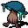

H のミノタウロス戦士ガイド H's Minotaur Fighter Guide
英語版 CrawlWiki の記事「H's Minotaur Fighter Guide」(0.33 向け、2026-05-10 版)の翻訳です。原文の著者は編集履歴をご覧ください。
この記事は 0.33 の時点の内容で、最新の 0.34 とは違うところがあるかもしれません。
ダンジョンクロウル・ストーンスープ(Dungeon Crawl Stone Soup)で初めての勝利を目指しているなら、このガイドはまさにあなたのためのものだ。扱うのは初心者向けの名コンビ、ミノタウロスの戦士(MiFi)である。必ずしも最適な攻略ではないし、ガイドの中にはいつでも従うべきとは限らない内容もある。それでも、単純な組み合わせで、単純かつ安定した勝ち筋をたどれるよう案内していくつもりだ。
このガイドは 0.33(2025年11月)に合わせて更新してある。 もともとは古い版(0.28)向けに書いたものなので、ところどころ不正確な点が残っているかもしれない。
ゲームのごく基本的なことは知っている前提で進める。知らなければ、ゲーム内でも wiki でもいいのでチュートリアルを見てほしい。ざっと説明すると、小文字の i で所持品を見る(すぐにたくさん集まる)。テンキーかクリックで移動する。モンスターに向かって移動すれば攻撃になる。あとは死なないことを祈ろう。ショートカットはたくさんあり、使うものも使わないものもある。? を押してもう一度 ? を押すと、全コマンドの一覧が見られる。ゲーム内のコマンドはすべて大文字と小文字を区別する。このガイドの各節へは右の目次から飛べる。
メインメニュー
最初に目にするのはキャラクター選択の画面だ。これはミノタウロスの戦士のガイドなので、ミノタウロスを選び、続いて戦士をクリックする。どちらも選択画面のほぼ先頭にあるはずだ。次にウォーアックスを選ぶ。最後に、オフラインで遊んでいるなら名前を決められる。これらの選択(名前以外)については次の節で説明する。さっさと迷宮に潜りたいなら読み飛ばしてかまわない。
キャラクターの構成
-
.png) ミノタウロス: ミノタウロスは「怪物度」で言えば10段階の7で、これを上回るのはトロルと、ときどき現れる悪魔の血族くらいしかないという由緒ある分類だ。実際そのとおりで、肉弾戦にかけてはまさに怪物、魔法にかけてはどうしようもないおバカである。HP が高く、鈍器っぽいものなら何でも見事に使いこなし、スキル適性はゲーム全体で最高クラスだ。
ミノタウロス: ミノタウロスは「怪物度」で言えば10段階の7で、これを上回るのはトロルと、ときどき現れる悪魔の血族くらいしかないという由緒ある分類だ。実際そのとおりで、肉弾戦にかけてはまさに怪物、魔法にかけてはどうしようもないおバカである。HP が高く、鈍器っぽいものなら何でも見事に使いこなし、スキル適性はゲーム全体で最高クラスだ。
- 怪物とはいえ、ミノタウロスは**そこまで**特殊な種族ではなく、オクトポードのような奇抜な種族とは違う。いちばんの売りは……角だ。この角は強力で、(古い版では)頭突きだけでゲームを丸ごとクリアできたほどだ。角で反撃できるのはミノタウロスだけである。ほかの種族も変異で角が生えれば攻撃のときに頭突きをするが、反撃はミノタウロスにしかできない。反撃の確率は20%から始まり、レベルが上がるにつれて増える。この効果は本当に強い。
- 角があると、一部の頭の防具が着けられない。10年前にはこれが大きな議論の的になった。山ドワーフが惜しくも削除され、その後釜に兜をかぶれないミノタウロスが収まったからだ。とはいえミノは帽子ならかぶれるし、帽子のほうがエンチャントの幅が広い。ただし(変異で)角がさらに大きくなると、帽子すらかぶれなくなるので注意。特徴らしい特徴はこれくらいで、角と能力値がすべてだ。
-
 戦士: 戦士はごく一般的な職業で、いわゆる「ウォリアー」(あるいは NetHack のヴァルキリー)に近い。メニューの最初に並んでいる職業で、それも当然だ。戦士は「良い」武器(ここではウォーアックスを選ぶ。理由はすぐ後で)と、鎧のスケイルメイル(初期装備の中では断トツで重いが、10階も潜らないうちにゴミになる)、そしてバックラー(実はかなり良いが、いずれはもっと重い盾がほしくなる)を持って始まる。
戦士: 戦士はごく一般的な職業で、いわゆる「ウォリアー」(あるいは NetHack のヴァルキリー)に近い。メニューの最初に並んでいる職業で、それも当然だ。戦士は「良い」武器(ここではウォーアックスを選ぶ。理由はすぐ後で)と、鎧のスケイルメイル(初期装備の中では断トツで重いが、10階も潜らないうちにゴミになる)、そしてバックラー(実はかなり良いが、いずれはもっと重い盾がほしくなる)を持って始まる。
- いちばんの売りはやはりバックラーだ。盾はどれもそうだが、バックラーを持つと両手武器が使えなくなる。小型の盾なので、武器の速度はわずかしか落ちない。そして SH は、実はあなたの防御のかなりの部分を担っている。「実は」と言ったが、開発者もそれに気づいて二度続けて弱体化した……それでも盾は良い選択だ。戦士なら戦闘能力で一歩先んじて始められ、ローブとハンドアックスでしばらく苦労させられることもない。
- 戦士は怪力の薬も持って始まる。この使い切りのアイテムは、かなり長いが限りのある間、近接攻撃1回ごとのダメージを 1d10 増やす(角の攻撃にも乗る！)。手強い敵に使おう。手強い敵には早めに使おう。
-
 斧: 「斧がおすすめだ(斧は楽しい)」(Linley Herzell、quickstart.md)
斧: 「斧がおすすめだ(斧は楽しい)」(Linley Herzell、quickstart.md)
- 斧には薙ぎ払いという固有の能力がある。振るたびに、隣接する敵すべてに70%のダメージを与える(主な目標には満額)。薙ぎ払いが登場して8年、なぜこれが一度も手を入れられていないのかは、私にはさっぱりわからない。これまでにあった弱体化は、ある1本の斧に対する1回きりで、それも次の更新で元に戻された。一番の理由はたぶん、そもそも複数の敵と同時に戦うべきではないということだろう！ 状況を完全に掌握しているプレイヤーは、斧があろうとなかろうと敵を1体ずつ相手にする。とはいえ、肝心なのは「完全に掌握している」という点だ。テレポートの罠や縦穴の罠でいきなりどこかへ放り出されたり、守護の大蛇が仲間4体を一瞬で周りにテレポートさせてきたりすることは何度もある。斧はそういう状況への保険だ。要するに、周りを囲む4体と同時に戦うのは最善ではないが、そうせざるを得ないときに斧は頼りになる。
こうした特徴から、斧を持ったミノ戦士(MiFi^Axes)は DCSS のコミュニティでちょっとしたネタになっている。これを上回るのはミノ狂戦士(MiBe、ミノタウロスの狂戦士)くらいのものだ。なぜミノ狂戦士にしないのか？ 私がそう決めたからだ。ミノ狂戦士のほうが安定していて、序盤はずっと強い。だがミノ戦士なら信仰する神を選べるので、中盤から終盤を落ち着いて進められる。
迷宮:1

さあ、いよいよゲームの中だ！ と思うだろうが、まだだ。歩き出す前に m を押してスキル画面を開こう。自動選択から手動選択に切り替える(まだならば)。自動のままでも勝てないことはないが、もっと上手くやれる。それに、これくらいなら大した手間もかからない。
今訓練するスキルは戦闘、斧、甲冑、盾だ。それ以外はすべて切っておく。斧の項目をもう一度押して重点訓練にする(+ ではなく * と表示される)。次にスキル画面で = を押し、スキルの目標値を有効にする。斧を選んで目標値を 18 にする。以後このガイドではっきり指示しない限り、これらのスキルには触らず、ほかのスキルも有効にしないこと。それで万事うまくいく。
繰り返すが、これはスキルの経験値の配分として本当に最適なやり方ではない。それでも十分通用する。ミノタウロスの腕力があれば楽に埋め合わせられる。
迷宮:1(今度こそ本番)
さあ、今度こそ本当にゲームの中だ！ 始まるのは、念入りに作られた数多くの入口用ヴォールトのどれかだ。どの部屋になるかはランダムだが、どれも誰かが手作業で作ったものである。妙に作り込まれた構造物があったら覚えておこう。後で危険になるかもしれない。
それから探索を始める。最適に探索するなら、適当な方向へ進んではいけない。少し探索したら引き返して、スタート地点に近いマスを探索する。退路の「後ろ」に未知の場所を残したくないからだ。そこにモンスターがいるかもしれない。必死に逃げている最中に、未知の場所からいつモンスターが現れて退路をふさぎ、あなたのミノタウロスの夢を終わらせるかわからない。(このやり方で探索しなくてもゲームには勝てる。)
アイテムは拾おう。薬と巻物は主な消耗品で、ほぼ必ず何かしらの使い道がある。都合のいいことに、これらはそのマスに乗るだけで自動的に拾われる(周りの緑の枠が目印)。名前(「濃い青色の」薬、「README」と書かれた巻物……)は毎回ランダムだが、1回のゲームの中では種類ごとに一定だ。鑑定の話は2階ぶんほど先で扱う。ほかのアイテムはすべて、3階ほど先のアイテムと装備の節で扱う。
そしてモンスターと戦おう。ただしその前に、x で調査モードに入り、モンスターの上で v を押して調べること。タイル版で遊んでいるなら、xv の代わりにモンスターを右クリックしてもいい。初めて見るモンスターには必ずそうする癖をつけたい。とはいえ、とりわけ恐ろしい相手の多くはこのガイドで紹介していく。
調べ終わっても、すぐにモンスターへ突っ込んではいけない。代わりに(s か . かテンキーの 5 で)待機して、モンスターのほうから来させよう。そうすれば未探索の場所をむやみに明かさずに済み、その時点でまだ見えていないモンスターに待ち伏せされたり囲まれたりしにくくなる。とくに慎重にいくなら、待つ前に探索済みの場所、できれば通路まで下がっておくといい。
要注意の敵
-
 ノールは迷宮:1ではとんでもなく怖い。ミノタウロスでもだ。武器について学ぶ良い教材でもある！ wiki にはノールのダメージは最大6とあるが、これには武器のダメージが含まれていない。調査画面では、武器込みのダメージが表示される。スピアを持つと1発6ダメージが12ダメージになり、XL 1 のミノタウロスなら2発で倒れる。
ノールは迷宮:1ではとんでもなく怖い。ミノタウロスでもだ。武器について学ぶ良い教材でもある！ wiki にはノールのダメージは最大6とあるが、これには武器のダメージが含まれていない。調査画面では、武器込みのダメージが表示される。スピアを持つと1発6ダメージが12ダメージになり、XL 1 のミノタウロスなら2発で倒れる。
- モンスターは、プレイヤーが使える武器の特殊な性質を何でも使えることを覚えておこう。斧を持ったモンスターは薙ぎ払いをしてくる。それより重要なのは、長柄武器(スピア、トライデント、ハルバード)を持ったモンスターが *2マス先から攻撃できる* ことだ。スピアを持ったノールに駆け寄ると、2回攻撃されてそのまま死ぬこともある。ありがたいことに、迷宮:1ではもうハルバードを持って出てくることはない(迷宮:2以降は持って出てくる)。
- 私がいつも「最大」と言っていることに注意してほしい。モンスターのダメージは均等に分布しているわけではない。AC でダメージは減るし、攻撃を防いだりかわしたりすることもある。ダンジョンクロウル・ストーンスープは、ローグライクらしく運の管理を軸にしたゲームだ。今1%の危険を冒すのはかまわなくても、1%の危険を100回冒せば *ろくなことにはならない*。
- いずれにせよ、ノールはそこそこ手強いモンスターで、ミノタウロス以外のプレイヤーなら簡単にやられる。XL1 で戦うなら、痛い一撃を1回もらった時点で怪力の薬を飲むのをためらわないこと。XL3 のミノ戦士なら、単独のノールとは互角に戦えるはずだ。なお、迷宮:1のノールはまだ手加減している！ これについては迷宮:2の概要で触れる。将来の多くの脅威と同じく、ノールが迷宮:1で出てくることはかなり珍しく、実際に相手をする羽目になる確率はかなり低い。
-
 クワッカも教材になる。今度はモンスターの速度についてだ。クワッカは素早い(つまり速度が100%を超える)ので、こちらが1回動く間にときどき2回動く。そのため逃げられないし、立ち位置を変えるのも難しくなる。クワッカは1ターンに最大10ダメージ(AC で2回減らされる)を与えてくる。ただ、攻撃をかわすのがうっとうしいほど上手いものの、よほど運が悪くない限り、クワッカはそれほど強いモンスターではない。HP が満タンなら、XL 3 ではまったくの雑魚、XL 1 でも十分に対処できる。
クワッカも教材になる。今度はモンスターの速度についてだ。クワッカは素早い(つまり速度が100%を超える)ので、こちらが1回動く間にときどき2回動く。そのため逃げられないし、立ち位置を変えるのも難しくなる。クワッカは1ターンに最大10ダメージ(AC で2回減らされる)を与えてくる。ただ、攻撃をかわすのがうっとうしいほど上手いものの、よほど運が悪くない限り、クワッカはそれほど強いモンスターではない。HP が満タンなら、XL 3 ではまったくの雑魚、XL 1 でも十分に対処できる。
- 素早い敵への小技を一つ。相手が2マス先(間に1マス空き)にいるときは、後ろへ歩き始めよう。普通の敵なら、待っていれば相手は自分のターンを移動に使うので、こちらが先に殴れる。素早い敵は2回続けて動けるので、こちらが立ち止まっていると「移動して殴る」をやられてしまう。後ろへ歩いていれば、いずれ相手は2回とも移動に使うことになり、また先手を取れる。
-
 ジャッカルも素早い敵で、群れで現れることが多い。ジャッカルの群れとの戦いは、斧があってもきれいには片づかない。素早いので有利な位置取りも難しい。だから1匹でも見かけたら、突っ込まずに向こうから来させよう。ジャッカルの群れは魔術師タイプのキャラクターには地獄だが、単独のジャッカルなら XL 1 のミノ戦士でも脅威にならない。群れでも、通路に下がって1ターンに4匹に噛まれないようにすれば楽に戦える。
ジャッカルも素早い敵で、群れで現れることが多い。ジャッカルの群れとの戦いは、斧があってもきれいには片づかない。素早いので有利な位置取りも難しい。だから1匹でも見かけたら、突っ込まずに向こうから来させよう。ジャッカルの群れは魔術師タイプのキャラクターには地獄だが、単独のジャッカルなら XL 1 のミノ戦士でも脅威にならない。群れでも、通路に下がって1ターンに4匹に噛まれないようにすれば楽に戦える。
戦術
戦術、つまりモンスターに出会ったときに実際どうするかを、文章で説明するのはとても難しい。quickstart.md に書いてあることはどれもかなり良い助言だ。
- 避けられるなら、2体以上のモンスターと同時に戦ってはいけない。必ず通路に下がり、相手が1対1で戦うしかないようにする。
- 接近戦に入る前に、飛び道具を使うことを忘れずに。
- 戦いの合間には休もう。`s`、`.`、Delete のコマンドで1ターン休み、`5` か Shift+テンキーの5 で長めに休む(HP が全快するかモンスターが見えたら休むのをやめる)。
- 手に負えない相手からはいつ逃げるべきかを学ぼう。これは大事だ！ 危険な階を飛ばすのが賢明なことも多い。ただしやりすぎないこと。
それ以外では、
1. 近接攻撃の敵に近づかない。(素早くない)モンスターとの間に1マスの隙間があるなら、待って先手を取ろう。クワッカの項で書いたとおり、モンスターが素早いなら、ただ待つのではなく後ろへ下がること。
7マス離れていても、厳密に言えば敵に近づくべきではない。少なくとも射撃攻撃を持たない敵には近づかないこと。暗闇の向こうに何がいるかはわからないし、前に出ればとんでもなく危険なモンスターを見つけてしまうかもしれない。待つか、モンスターに物を投げつけるのが一番だ。勉強熱心な人なら、モンスターを引き寄せる前に完全に探索済みの場所まで下がりたくなるだろう。そうしておけば、理想的には通路まで下がって敵を1体ずつ相手にできる。
1B. 敵と隣接しているときは、よほどの理由がない限り動かない。隣接した状態で動くたびに、機会攻撃を受ける恐れがある。
2. 射撃攻撃を持つ敵には、できれば角や壁の陰に隠れて、相手のほうから近づいてこさせたい。次の例を見てほしい。
..@..
--.--
.|.|.
.|.|.
.|M|.
このように通路が部屋に開けている場所では、@ の記号(プレイヤー)は左右どちらかに2マス動けば見られずに済む。「2マス、つまり対角線の経路から1マス外れた位置」だ。たいていの角ではこれで通用する。射撃攻撃を持つモンスターのかなりの部分(とくにセントール)は、接近戦では射撃武器を撃ってこない。

視界(モンスターは視界の外からは決して攻撃してこない)は、注意対象の機能を使えば目で確かめられる。X でマップモードに入り、e で注意対象の範囲を作る。注意対象の範囲は選んだマスが見えるマスすべてを覆うので、視界の広がりがわかる。同じマスでもう一度このコマンドを使えば解除できる。X でマップモードに入り(抜けていたら)、Ctrl+e を押せばすべての注意対象を解除できる。
機会攻撃
機会攻撃はごく最近の仕組みで、とくに最初の数階では必ず知っておかなければならない。
速度100%(「普通の速度」)のモンスターは、基本的に1ターンに1回行動できる。モンスターの説明を見て Speed: <X>% が無ければ速度は100%だ。ところが、あなたが移動したときに隣にモンスターがいると、そのモンスターは「タダで」即座に攻撃してから移動でき、1ターンに1回という「ルール」が破られる。あなたと同じかそれより速いモンスター(プレイヤーは標準で速度100%)なら、どれでもこのタダの攻撃ができる。
そのため、戦闘前の位置取りがとても大事になる。近接攻撃の敵が相手なら、隣接される前に通路や階段へ移っておくのがたいてい一番だ。敵が1体しか見えなくても、さらに出てくるかもしれない。
この仕組みのせいで、HP を回復するために延々と回り続ける戦法は使いにくくなっている。柱回り(HP を回復するために延々と回り続けること)を聞いたことがあるなら、忘れてしまおう。ここでの目的には存在しないも同然だ。今でもあるにはあるが、活用するには召喚を使うかスプリガンで遊ぶ必要がある。
エネルギーのランダム化
0.31 以降は、機会攻撃と「エネルギーのランダム化」の両方が同時に存在する。エネルギーのランダム化は昔とは少し仕組みが違うので、手短に済ませる。
あなたがモンスターから離れるように移動し、かつモンスターがあなたに向かって移動しようとするとき、モンスターがときどき余分に1ターン動いたり、1ターン失ったりする。1ターン失えば、後で余分に1ターン動く可能性が高くなり、逆もまた同じだ。最新版では、エネルギーのランダム化が働くには、1. あなたが移動し、2. 敵も移動する必要があることを覚えておこう。
前に書いたとおり、モンスターが素早ければ、あなたが動かなくても余分にターンを得ることがある。
学び方について
「戦術」の話はこの小節以外ではあまりしない。とはいえ、戦術は DCSS の根幹をなす部分だ。このガイドを読むだけでは、何か大事なものを取りこぼしてしまうのではと心配になる。
戦術を身につけるのは、だいたいにおいてかなり難しい……だから、ほかのプレイヤーが DCSS を遊ぶ動画を見ることを強くおすすめする(動画は本当にたくさんある)。多くのプレイ動画では実況者が自分の考えを説明してくれるので、それを自分のゲームに応用できる。最悪でも、プレイを見ているうちに「上手いプレイヤーの癖」が身につく。YouTube で「ミノタウロスの狂戦士」(Minotaur Berserker)と検索して(ミノ戦士のシリーズはあまりない)、上位の結果からどれでも選べばいい。
文章のガイドが好みなら、UV4 の素晴らしいサイトがある(リンク1)(リンク2)。少し古いが、敵が隣にいるときは動いてはいけない(つまり柱回りはしない)ということさえ忘れなければ良い内容だ。
ここで自動探索にも触れておこう。o キーで使える。手動の探索のほうが安全なので、このガイドでは以降ずっと自動探索は無いものとして話を進める。ただ現実的には、自動探索でかなりの時間が節約できるし、このゲームの半分以上は本当にどうでもいい部分だ。ありがたいことに、このゲームは自動探索でもだいたい問題なく進めるように作られている。
迷宮:2
迷宮の2階は、ある一つの理由から迷宮:1よりたいてい安全だ。上り階段があるのだ。それも3つも！ DCSS の階のほとんどには、分岐の入口を除いて、上り階段と下り階段が3つずつある(迷宮:10 → 獣の棲み処:1 は階段に数えない)。ともかく、探索し終えた階に上がるのは、かなり安全でとても強力な手段だ。階段の昇り降りには2.5ターンかかるが、ついて来られるのはすぐ隣にいるモンスターだけだ。そして「未知の」階段を下りるのは一瞬なので、出現したモンスターの運が悪かったときに一度だけ逃げられる。
前の階の助言の延長として、階段の近くを探索するようにしよう。階段までは必ず探索済みの経路を確保し、未探索の分かれ道はどちらの「側」にも足を運ぶ。理想は各階段の周りをぐるりと探索することだ。モンスターをまだ見つけていないなら、引き返してまったく別の方向を探索するのをためらわなくていい。階段までの距離を最適にするために3つの階段すべてを訪れることもできるが、危険がないわけではない。とんでもなく危険なモンスターに出くわす恐れがあるし、そもそも必要もない(よほどひどい地形の階は別だ)。
複数のモンスターが見えたら、階段を有利に使える。階段を通るとき、ついて来るのは最初からあなたに隣接していたモンスターだけだ。だから、隣接しているモンスターが数体だけのときに階段を上れば、モンスターを分断できる。上の階が安全なことは確かめておくこと。階段を通るのは2.5ターンかかるので、強力なモンスターが相手だと危険なことも忘れずに。これを階段ダンスという。
近接攻撃の間合いに入ってから、モンスターを階段まで引きずって行こうとしては絶対にいけない。隣のモンスターは、あなたが1歩動くたびにタダで攻撃してくる可能性がある。敵が隣に来る前に階段の近くまで引き寄せよう。モンスターが隣に来る前に動け。
また、上り階段が現れたことで、鑑定のミニゲームを始められるようになった！ これは下の鑑定の節で扱う。だがまずは要注意の敵からだ。
要注意の敵
-
 マムシはクワッカの強化版で、より速く、守りが固く、噛みつきも強い。そして何より、毒を与えてくる。このゲームでは毒が本当にあっという間に積み重なり、弱いキャラクターは毒だけで HP の半分を失っていたりする。マムシは素早いことを思い出してほしい。いったん隣に来られたら、戦うしかない。初めて迷宮:2に下りた直後に見かけたなら、相手にせずすぐ上に戻ろう。実のところ、XL 3 か XL 2 のミノタウロスでもたぶん倒せるが、Crawl のようなゲームで確率に賭けるのは避けたい。それに倒せるのはミノタウロスが壊れ性能で、角も壊れ性能だからであって、マムシが弱いからではない。
マムシはクワッカの強化版で、より速く、守りが固く、噛みつきも強い。そして何より、毒を与えてくる。このゲームでは毒が本当にあっという間に積み重なり、弱いキャラクターは毒だけで HP の半分を失っていたりする。マムシは素早いことを思い出してほしい。いったん隣に来られたら、戦うしかない。初めて迷宮:2に下りた直後に見かけたなら、相手にせずすぐ上に戻ろう。実のところ、XL 3 か XL 2 のミノタウロスでもたぶん倒せるが、Crawl のようなゲームで確率に賭けるのは避けたい。それに倒せるのはミノタウロスが壊れ性能で、角も壊れ性能だからであって、マムシが弱いからではない。
- 低レベルでこいつと戦う羽目になったら、戦いのかなり早い段階で怪力の薬を飲むことになるだろう。具体的には、毒で HP が70%くらいを下回ったときだ(HP バーに黄色のダメージとして表示される。毒の正確な量は % で確認できる)。それでもマムシと戦っていて HP が危険な水準(毒を除いて10未満)になったら、未鑑定の薬を片っ端から飲み始めよう。一番多い薬は治療の薬で、次が怪我の治療の薬だ。だから数の多い薬から飲むといい。とはいえ迷宮:2を終えるころ(XL5)には、よほど運が悪くない限りマムシは脅威ではなくなっているはずだ(わずかな危険を受け入れざるを得ないこともある。それまで警戒していたら、使える消耗品が何も残らない)。
- ノールはこの階から剣(？ 棍棒？ ハルバードだ)を抜いてくる。この時点ならノール1匹にはおそらく対処できるが、薙ぎ払いすらできない状態で長柄武器を持ったノール4匹に同時に殴られるのは楽しくない。1匹ずつ戦おう。長柄武器を持っているなら、ただ通路に入るだけでは対処しきれない。
- さらに悪いことに、ノールは(この階以降)あの恐ろしい投げ網を持って出てくることがある。冗談ではない。網に絡まると動けず、近接攻撃もできず、網を破るかテレポートで抜け出すまで EV がほぼゼロになる。網を持ったノールが画面にいるときに逃げるのは危険だ。紫の枠で囲まれたノールには気をつけよう。ノールの群れと戦えたとしても(迷宮:2の終わりごろなら勝てる)、網に捕まったまま図体のでかいオーガと向き合うのはごめんだろう。
-
 ヒモムシは蜘蛛の巣を吐く。これは投げ網を無限に持っているのと同じだ。そのため、ほかのモンスターが近くにいるときはとてつもない脅威になる。単独でも楽な相手ではない。ありがたいことに動きが遅いので、逃げられる。
ヒモムシは蜘蛛の巣を吐く。これは投げ網を無限に持っているのと同じだ。そのため、ほかのモンスターが近くにいるときはとてつもない脅威になる。単独でも楽な相手ではない。ありがたいことに動きが遅いので、逃げられる。
- ヒモムシが7マス先、つまりあなたの視界の端にいるなら、退却は100%安全だ。あなたの視界は7マスで、モンスターは *あなたの* 視界の外からは攻撃できない。だからヒモムシが7マス先にいるときに1歩下がれば、相手は8マス先になり、ターンを使って1歩詰めなければならない。相手は遅いので、だんだん距離が開いていく。
-
 逃げろ。こいつらはここに出てくるはずのない相手だ。あなたにはまだ早い。普通のオークなら問題ないが、オークが何匹もいたら近くに司祭がいる合図かもしれない。必要なら迷宮:3に下りてしまおう。まだ早いのだ。オークの司祭は次の階の脅威の一覧で扱う。無傷のまま隣にいるなら、実はそれほど手強くもない？ 怪力の薬を飲んで斧を振り回そう。その前にオークの群れを突破できればの話だが。オークの司祭はたいていほかのオークと一緒にいる。
逃げろ。こいつらはここに出てくるはずのない相手だ。あなたにはまだ早い。普通のオークなら問題ないが、オークが何匹もいたら近くに司祭がいる合図かもしれない。必要なら迷宮:3に下りてしまおう。まだ早いのだ。オークの司祭は次の階の脅威の一覧で扱う。無傷のまま隣にいるなら、実はそれほど手強くもない？ 怪力の薬を飲んで斧を振り回そう。その前にオークの群れを突破できればの話だが。オークの司祭はたいていほかのオークと一緒にいる。
-
 シグムンドは、最初に出会う可能性のあるユニーク(ユニークモンスター、名前つきのモンスター、人間っぽい名前の奴ら)の一人だ。ほかの迷宮:2のユニーク(ジェシカ、ナターシャ、ロビン、テレンス)はミノ戦士ならまあなんとかなるが、シグムンドの1ダメージの攻撃(大鎌、つまり長柄武器で +13)は積み重なると馬鹿にならない。さらに悪いのがお楽しみのほうで、何度も何度も混乱させられ、何もまともにできないまま火炎の投射を浴びせられて死ぬまで続く。オークの司祭の項に書いたことをすべて実行し、さらに用心しよう。司祭と違って、シグムンドはこれほど浅い階に出るよう意図して作られている。
シグムンドは、最初に出会う可能性のあるユニーク(ユニークモンスター、名前つきのモンスター、人間っぽい名前の奴ら)の一人だ。ほかの迷宮:2のユニーク(ジェシカ、ナターシャ、ロビン、テレンス)はミノ戦士ならまあなんとかなるが、シグムンドの1ダメージの攻撃(大鎌、つまり長柄武器で +13)は積み重なると馬鹿にならない。さらに悪いのがお楽しみのほうで、何度も何度も混乱させられ、何もまともにできないまま火炎の投射を浴びせられて死ぬまで続く。オークの司祭の項に書いたことをすべて実行し、さらに用心しよう。司祭と違って、シグムンドはこれほど浅い階に出るよう意図して作られている。
- ヒモムシの項で書いたとおり、シグムンドやオークの司祭に視界の端で出会ったなら、退却はたいてい安全だ。ただしヒモムシと違って、シグムンドやオークの司祭はあなたと同じ速さで動く。だからエネルギーのランダム化で2回続けて動かれ、殺されることもありうる。それでも、モンスターを視界の端に保っておくのはたいてい安全だ。少なくとも、戦うよりはずっと安全である。
能力値のポイント
経験レベル3(XL3)と、以後6レベルごとに、能力値のポイントを選べる。腕力を選ぼう。ダメージが増えるのは良いことだし、防具の面でも役に立つ。
能力値が0になると、0より上に戻るまで減速(速度66%)する。0.33 の時点で能力値が下がる原因は変異(変異で知力が5から0まで落ちる確率はとても低いし、そもそも変異は避けるべきだ)か装備品(自分の意思で着けるもの)しかないので、知力を上げる心配はいらない。安心したければ、中盤か終盤に一度だけ知力を上げておけば能力値ゼロを避けられる。わざわざこれに触れるのは、以前の版では知力の低下がもっとよくあったからだ。
鑑定

鑑定は NetHack のゲームプレイの中心的な要素の一つだが、ここストーンスープの世界ではかなり簡略化されている。最近の版では、身に着けられる装備品(武器、防具、指輪)はすべて自動的に鑑定されるので、実際に正体を突き止める必要があるのは薬と巻物だけだ。
鑑定する一つ目の方法は、単に使ってみることだ。薬も巻物も使えば鑑定される。実際に何か効果があったかどうかは関係なく、正体はわかる。もう一つの主な方法は鑑定の巻物を使うことだ。ただし鑑定の巻物自体も未鑑定なので、手探りで使ってみるしかない。最後に、珍しい場所の中には鑑定済みのアイテムが置いてあるところもある。たとえば納骨堂の堕落の薬だ。これはまったく当てにならない。
要するに、遅かれ早かれアイテムを「無駄に」することになる。手探りで使って鑑定したことがその場で役立つように、少なくとも2つ以上持っているアイテムを読む・飲むようにしよう。必須ではないが、とても役に立つ。都合のいいことに、一番よく出る薬(治療の薬、怪我の治療の薬)と巻物(鑑定の巻物、テレポートの巻物)は、どれも持っておくととても便利なアイテムだ。このうち巻物から先に読もう。ただし、すぐに読んではいけない！
(2つ以上持っている)巻物は、探索済みの階へ通じる上り階段の上で、敵が見えないときに、できれば未探索の階で読むこと。
追記: 蝶の巻物か召喚の巻物を読んだ後に焼き討ちの巻物を読んでしまったら、読むのをやめること。階段を上り下りして呼び出されたものを片づけてから、続きを読もう。
上り階段の上で読むのが欠かせないのは、テレポートの巻物があるからだ。この巻物は階のほぼどこにでも飛ばすので、上り階段という安全な逃げ道がない危険な状況に陥るかもしれない。敵を引き寄せることがある騒音の巻物に備えて、上に逃げられるのも助かる。上の階が探索済みである必要があるのは、わざわざ1階まるごと飛ばしてまで避けた相手の隣にテレポートするのは楽しくないからだ。未探索の階で読むのは必須ではないが、啓示の巻物の効果を最大限に活かせる。
一般に、薬より巻物を先に読むほうがいい。まず、瞬間移動の巻物は最高の逃走用アイテムだ。多くの巻物は持続的な強化をもたらし(魔力の武器の巻物、防具強化の巻物……)、恒久的な害を与えるものは一つもない。そして鑑定が巻物であるという事実だけで、手探りで *読む* ことは避けられない。一方の薬では、恒久的な強化をくれるのは珍しい経験の薬だけだ。突然変異の薬は良くも悪くもなる半永久的な変化をもたらし[注1]、堕落の薬は治すのに経験値が必要になる。薬は決して手探りで飲まないというプレイヤーもいるが、私としては、2つ以上持っている薬も飲むことをおすすめする。階段の上である必要はない。飲む前に安全を確かめておけばいい。切羽詰まった状況なら、それすらいらない。薬は強力な一時的効果のものが多いので、本当に困ったときに手探りで飲むといい。
鑑定の巻物が使えるようになったら、薬の鑑定に使おう。理由は上と同じで、薬のほうが強力だが一時的な効果を持っていることが多いからだ。緊急時を想定して作られていて、しかも大量には手に入らない巻物は、本当のところ瞬間移動の巻物くらいしかない(テレポートや煙幕とは違う)。だからほかの巻物を鑑定する価値はそれほど高くない。
なお、巻物を迷宮:4まで取っておいて(上の鑑定の手順で読むか、全部読むかして)、啓示の巻物を引いて寺院を早く見つけたがるプレイヤーもいる。寺院には多くの神々の祭壇があるので、重要な分岐である可能性がとても高い。とはいえ、この助言を補足扱いにしているのには理由がある。アイテムはできるだけ早く鑑定しておくのが一番だ。
最後に、これらのアイテムが実際に何をするのかは付録1: 薬と巻物(最新版には未対応)で確かめてほしい。ただし更新はされていない。
* [注1] 突然変異の薬は、ゲームが終わりかねないひどい、ひどい変異(不随意瞬間移動、不随意バーサーク、危険な巻物の使用不可)をもたらすことがある。薬は良い変異のほうが出やすいとはいえ、この3つの変異は、得られるかもしれない良い変異(本当に良いものもある)を補って余りあるほど悪い。ありがたいことに、手探りで飲んでこの3つのどれかを引き、しかも2本目の薬でそれが消えない確率は、実はかなり低い。さらに重要なのは、変異を治す手段が突然変異の薬しかないことで、だからこそ賭けに出るべきではない。それでも前述の悪い変異のどれかが残ってしまったら、ゲームを最初からやり直したほうがいいかもしれない[注2]。
** [注2] とはいえ、ゲームはまだ十分遊べる。少なくとも開発者はそう考えている。
迷宮:3
迷宮:3 は迷宮:2 とよく似ている。階段があり、迷宮そのものも同じように生成され、モンスターがわんさかいる。上で述べた戦い方が急に通用しなくなることはない。
要注意の敵
- オークの司祭は相変わらず本当に恐ろしい。原因は、AC を無視して絶対に外れず、画面のどこからでも撃ってくる7〜17ダメージの打擲の一撃だ。仲間のオークの魔術師をはじめ、多くのモンスターはあなたに当てるのに直接の射線を必要とする。司祭は視界さえ通っていればいい。打擲の一撃は毎ターン飛んでくるわけではないし、毎ターン最大値が出るわけでもないが、決まった待ち時間があるわけでもない。突っ込もうとすれば何度も打たれるかもしれないし、オークとの戦いの最中に打たれることもある。オークといえば、司祭はほかのオークの群れと一緒に出てくることが多い。ほかのオークが見えたら、すぐに下がり始めて手下どもを引き離そう。
-
 オークの魔術師はシグムンドと同じ呪文を使う。大鎌も力も耐久力もないぶん、対処はしやすい。とはいえ混乱はさせてくるし、何度も続けて混乱させられたら死ぬ。戦う前に治療の薬を鑑定して手元に置いておくのが一番だ。殴り合いはやや危険だが、すでに7マス離れているのでなければ、逃げるほうがもっと危険だ。司祭と同じく、ほかのオークと一緒にいることが多い。
オークの魔術師はシグムンドと同じ呪文を使う。大鎌も力も耐久力もないぶん、対処はしやすい。とはいえ混乱はさせてくるし、何度も続けて混乱させられたら死ぬ。戦う前に治療の薬を鑑定して手元に置いておくのが一番だ。殴り合いはやや危険だが、すでに7マス離れているのでなければ、逃げるほうがもっと危険だ。司祭と同じく、ほかのオークと一緒にいることが多い。
-
 ユニークのほとんどは、特別に強い「ボス」モンスターだ。数が多すぎて挙げきれないし、たいていはその時点のレベルに対して手強いように作られている。それでも、右クリックか x v でいつでも何をしてくるか確かめられる。迷宮:3のユニークで断トツに怖いのはグラインダーで、麻痺の呪文を使ってくる。麻痺すると EV と SH がゼロになり、何もできなくなる。これが最大5ターン(以前の版では7ターン)続く。ここから先のユニークは、簡潔にするためにほとんど省く。
ユニークのほとんどは、特別に強い「ボス」モンスターだ。数が多すぎて挙げきれないし、たいていはその時点のレベルに対して手強いように作られている。それでも、右クリックか x v でいつでも何をしてくるか確かめられる。迷宮:3のユニークで断トツに怖いのはグラインダーで、麻痺の呪文を使ってくる。麻痺すると EV と SH がゼロになり、何もできなくなる。これが最大5ターン(以前の版では7ターン)続く。ここから先のユニークは、簡潔にするためにほとんど省く。
アイテムと装備
私たち(あなた)はミノタウロスの戦士、斧を振るい、盾を構え、重い鎧を着込んだ奴だ。そこから外れる必要はまったくない。ドラゴン殺し？ ゴミだ。でかい斧のフロストバイト？ たぶん使えるが、盾は外さないこと。アルガ？ ゲーム全体で最高の片手斧だ。
実のところ、今挙げたアイテムはどれも良いものだし、まず見つからない。だがこのガイドでは無視する。たとえばドラゴン殺しは乗り換える価値がある程度には良い武器だ……が、ガイドでそんなに多くの場合を説明するのは無理だ。言いたいのは、とくに運に恵まれなくてもミノタウロスは斧で勝てるということ。だから今は斧一本でいこう。
装備品
ブロードアックスは、初期装備のウォーアックスより大きい(だから強い)唯一の片手斧だ。混沌を除き、どのブランド(毒液のハンドアックス、冷気のウォーアックス……)も無いよりはましで、ブランドの付いた武器はブランド無しでエンチャントの高い武器より良い。火炎の斧は見つけたら拾っておこう。火炎の両手斧は「盾を持て！」という原則の唯一の例外だが、それはまだ先の話だ。
ハンドアックスは、ブランド付きかエンチャントの高いものなら、ただのウォーアックスより強い。すばらしいアーティファクトの斧でもない限り、ブロードアックスに持ち替えても安全なのは斧スキルが14以上になってからだ。実際には斧スキル10〜12で持ち替えてもいいだろう。武器強化の巻物や魔力の武器の巻物は、やむを得ない場合を除いてウォーアックスには使わないこと(手探りで読むとやむを得なくなるので、そのときは仕方ない)。なくても困らないはずだ。
着られる中で一番重い防具を着よう。ミノタウロスは腕力が十分あるので、何を着ても楽に動ける。プレートアーマーは「一般的な」防具の中で一番重く、モンスターが着ていることもある。AC は高いほどいい(i で所持品を開けば AC の変化を確かめられる)が、鈍重のブランドは避けること。移動が遅くなるのは、機会攻撃のことを考えても割に合わない。胴体の防具以外は、着ることによる代償がまったくない。帽子、手袋、クローク、ブーツはタダで AC をくれる。防具強化の巻物が手に入ったら、私ならブーツ → 手袋 → 帽子 → クローク → 胴体の順に強化する(交換されにくい順だ)。意志力の帽子と、何かの耐性が付いたクロークは、ほぼその部位で最高の装備なので、先に強化してもかまわない。盾はもっと好みによる。私はカイトシールドを見つけ次第乗り換え、スキルが15以上になったらタワーシールドに替えるのが好きだ。
なお、呪い、つまり外せなくなるアイテムは廃止されている。好きなだけ装備してみよう。外すと痛い目を見る数少ないものについては、ゲームが警告してくれる。
武器と指輪は外すのに0.5ターンかかるが、防具と護符は外すのに5ターンかかることを覚えておこう。
アーティファクト
アーティファクト(artifact という綴りでもゲームは受け付ける)は白い文字で表示される。水色の文字のアーティファクトは、固有の決まった性質を持つ特別なアーティファクトだ。いつもより良いとは限らないが、特別ではある。
*Slow、*Rage、*Silence が付いたものは常に論外だ。属性への弱点は避けるようにしよう。ほかのアイテムの耐性で打ち消せる。斧以外の武器や、獣の棲み処やオークの坑道を過ぎたあたりからはブロードアックス以外の斧も、検討する価値はない。胴体の防具や武器には、それなりの +X も付いていてほしい。今使っているアーティファクトでない装備と同等かそれ以上だ。必要になりそうな耐性のものは取っておき、それ以外は一番強力なものや一番良いブランドの武器を選ぼう。耐性が付いていて、ひどい欠点(腕力マイナス、殺戮マイナス、属性への弱点、*Rage……)の無い防具は良いものだ。アーティファクトが無くても勝てる。
それから、黒曜石の斧は手に取らないこと。負けても私のせいじゃないぞ！
使うアイテム
だが、アイテムは装備欄の数よりたくさんある！ 出会うかもしれない優れたアイテムをいくつか見ていこう。迷宮のどこかでアイテムを見落としたら、Ctrl-f で検索できる。念のため、薬と巻物は付録1: 薬と巻物にある。
-

 投げられるアイテム(石、ブーメラン、ジャベリン。弱い順)は、手軽に手に入る射撃攻撃だ。投擲にはいずれスキルを振る(まだだ！)が、スキル0でも石を投げるのは何もしないよりましだ。ブーメランから上はかなり強力なアイテムだ。ジャベリンはとくにぶっ壊れていて、貫通するので1回投げれば複数の敵を射抜ける。斧なら8体の敵を一度に殴れるかもしれないが、こちらも8体ぶんのダメージを受ける。通路でジャベリンを投げれば、7体の敵に当てつつ、受けるダメージは1体ぶんで済む。とんでもなく強いが、ジャベリンの数には限りがある。
投げられるアイテム(石、ブーメラン、ジャベリン。弱い順)は、手軽に手に入る射撃攻撃だ。投擲にはいずれスキルを振る(まだだ！)が、スキル0でも石を投げるのは何もしないよりましだ。ブーメランから上はかなり強力なアイテムだ。ジャベリンはとくにぶっ壊れていて、貫通するので1回投げれば複数の敵を射抜ける。斧なら8体の敵を一度に殴れるかもしれないが、こちらも8体ぶんのダメージを受ける。通路でジャベリンを投げれば、7体の敵に当てつつ、受けるダメージは1体ぶんで済む。とんでもなく強いが、ジャベリンの数には限りがある。
- スキルが無い状態で大きいほうの2つを投げると、1ターンより長くかかることを覚えておこう。だから敵が1マス先にいるときは投げないこと。投げられるものは見つけたら全部拾っておこう。石以外の投擲武器は投げてもなくならないが、投げるたびに壊れて(消えて)しまう可能性がある。
-
 毒のダーツは、敵が毒に耐性を持っていなければ、この段階では驚くほど強力だ。石と同じくらい命中しやすく、威力は上なので、ダーツが十分あるなら石は捨ててしまってもいい。毒のダーツは獣の棲み処までは役に立ち、その後も毒耐性低下の敵(蜂や蜘蛛など)には有効だ。
毒のダーツは、敵が毒に耐性を持っていなければ、この段階では驚くほど強力だ。石と同じくらい命中しやすく、威力は上なので、ダーツが十分あるなら石は捨ててしまってもいい。毒のダーツは獣の棲み処までは役に立ち、その後も毒耐性低下の敵(蜂や蜘蛛など)には有効だ。
-
 クラーレ毒のダーツは毒のダーツより桁違いに強い。減速させるからで、減速すると行動の速さがすべて33%落ちる。減速した敵から受けるダメージは33%減るうえ、ちゃんと逃げ切ることもできる。減速に加えて、この段階ではクラーレ自体もかなりのダメージを与える。普通の毒のダーツと同じく、毒耐性を持つ敵にはどの効果も効かない(rPois の防具を着た敵に注意！)。
クラーレ毒のダーツは毒のダーツより桁違いに強い。減速させるからで、減速すると行動の速さがすべて33%落ちる。減速した敵から受けるダメージは33%減るうえ、ちゃんと逃げ切ることもできる。減速に加えて、この段階ではクラーレ自体もかなりのダメージを与える。普通の毒のダーツと同じく、毒耐性を持つ敵にはどの効果も効かない(rPois の防具を着た敵に注意！)。
- 終盤になっても、多くのユニークや厄介な強敵は毒に耐性がない(だからクラーレが効く)。ほかの特殊なダーツ(アトロパ毒、ダチュラ毒)と違って、クラーレは命中して相手が rPois を持っていない限り、必ず効果を発揮する。
-
 ノールが持っていたあれを、今度はあなたが活用できる。投げ網だ。網に絡まった敵はそのマスから動けず、たいてい網を破るのにターンを使い、EV が下がり、急所攻撃を受けやすくなる(あなたのダメージが少し増える)。実はかなり珍しいが、とても強力だ(そしてかなり当たりやすい)。
ノールが持っていたあれを、今度はあなたが活用できる。投げ網だ。網に絡まった敵はそのマスから動けず、たいてい網を破るのにターンを使い、EV が下がり、急所攻撃を受けやすくなる(あなたのダメージが少し増える)。実はかなり珍しいが、とても強力だ(そしてかなり当たりやすい)。
ここまでのアイテムはどれも投げるものだ。だが、ほかにもちゃんと使えるアイテムはある。
-
 ワンドはかなり強く、充填もそこそこよく手に入る。私はワンドのために発動を少しだけ訓練するのが好きだ。ただ、このガイドの目的からすれば必要ないと思う。
ワンドはかなり強く、充填もそこそこよく手に入る。私はワンドのために発動を少しだけ訓練するのが好きだ。ただ、このガイドの目的からすれば必要ないと思う。
- 火炎のワンドは、水の上を通ると蒸気の雲を生む。電気ウナギにうってつけだ。
- 吹雪のワンド/根縛りのワンド/歪曲のワンド(1回のゲームで出るのはどれか1種類だけ)は、どれも3x3の範囲にダメージを与え、決して外れない。吹雪はそのままダメージを与える。根縛りは敵をその場に縛りつけ、しかもしばらく EV を情けない値まで下げる(発動スキルが低いとあまり長くは続かないが)。歪曲は敵を遠くへ瞬間移動させる。
- 魅了のワンド/金縛りのワンド(これも1回のゲームでどちらか1種類だけ)は、敵に呪いをかけるのに使える。意志力の判定に勝てば、多くの状況が解決する。たとえばユニークを麻痺させれば、ほぼ倒したも同然だ。魅了なら、モンスターを魅了してから t で r の退却を命じれば、戦いから逃げられる。
- 強酸のワンド/光のワンド/水銀のワンド(これも1回のゲームで1種類だけ)は、高いダメージを与え、敵を貫通し、強力な弱体化を与える(水銀の場合は強化を消し去る)。
- 変化のワンドは、意志力の判定に勝てば、敵を3種類のうちどれかの敵に変える。武器を持った敵、たとえばセントールに使うのが一番だ。
- 掘削のワンドを使うと、岩の壁(石・金属・水晶の壁は不可)ならどこにでも通路を作れる。どうしても必要なら新しい道も作れる。敵と1体ずつ戦うのにとても便利だが、珍しい。
そう、残っている消耗品はこれだけだ。装身具はどうだろう？
-
 護符はどれもほぼ有益で、欠点はほとんど、あるいはまったくない。私の中での順位は、反射 >= 再生 > 信仰 > 守護霊 > 軽業師だ。再生と反射はどちらも戦闘で優秀な護符だ。信仰の護符は外すと罰を受けるが、着けている間は神の好意が増えるので、かなり良い。守護霊、軽業師、魔力再生はどれもこのビルドにはささやかな強化だが、着けておいて損はない。
護符はどれもほぼ有益で、欠点はほとんど、あるいはまったくない。私の中での順位は、反射 >= 再生 > 信仰 > 守護霊 > 軽業師だ。再生と反射はどちらも戦闘で優秀な護符だ。信仰の護符は外すと罰を受けるが、着けている間は神の好意が増えるので、かなり良い。守護霊、軽業師、魔力再生はどれもこのビルドにはささやかな強化だが、着けておいて損はない。
-
 指輪も、炎の指輪と氷の指輪(もう一方の属性への弱点が付く)を除けば、どれも有益だ。指輪はすぐに付け替えられるので、関係のある敵を見つけたり、関係のある分岐に入ったりしたときに替えればいい。意志力の指輪、殺戮の指輪、護りの指輪、躱し身の指輪はいつでも役に立つ。3つ以上見つけたら、この順に着けよう。ほかの装備で Will++++ があるなら、それ以上はいらない。
指輪も、炎の指輪と氷の指輪(もう一方の属性への弱点が付く)を除けば、どれも有益だ。指輪はすぐに付け替えられるので、関係のある敵を見つけたり、関係のある分岐に入ったりしたときに替えればいい。意志力の指輪、殺戮の指輪、護りの指輪、躱し身の指輪はいつでも役に立つ。3つ以上見つけたら、この順に着けよう。ほかの装備で Will++++ があるなら、それ以上はいらない。
アーティファクト(明るい白の文字)には悪い性質が付いていることもあるので注意。
迷宮:4(と寺院)
迷宮:4 は迷宮:3 と同じだ。同じ階段、似たような地形、同じようなモンスターの群れ。一つだけ違うのは、寺院が出現する可能性があることだ。
寺院は(モンスターを引き連れて入らない限り)完全に安全な分岐で、寺院の神々の祭壇が出る可能性がとても高い。寺院の神々の祭壇は、寺院の中か迷宮:3〜10のどこかに、必ず一度だけ出る。ほぼすべての神の祭壇がそろうこともあれば、ごくまれに一つもないこともある。肝心なのは、私たちのほしい神の祭壇はたぶんそこに出るということだ。寺院自体は迷宮:4〜7のどこかに出るので、啓示の巻物を期待して迷宮:4に入ったところで巻物を読むプレイヤーもいる。
要注意の敵
-
 オーガは巨大棍棒を振り回す。1ターンに最大37ダメージ、逆棘付きなら39ダメージだ。幸い、振りは遅い。遅れを取る前に機会攻撃を1〜2回入れてくるのがせいぜいだ。それでもオーガに2発で倒される状態なら、その危険は冒さないこと。オーガは速度10(あなたと同じ速さ)の敵なので、逃げ切れることも多い。
オーガは巨大棍棒を振り回す。1ターンに最大37ダメージ、逆棘付きなら39ダメージだ。幸い、振りは遅い。遅れを取る前に機会攻撃を1〜2回入れてくるのがせいぜいだ。それでもオーガに2発で倒される状態なら、その危険は冒さないこと。オーガは速度10(あなたと同じ速さ)の敵なので、逃げ切れることも多い。
-

眠りキノコは攻撃を当てると睡眠状態にしてくる。睡眠状態になると動けなくなり、EV がほぼ0まで下がり、モンスターの近接攻撃のダメージが上乗せされる。眠りキノコ単体でも1ラウンドに最大32ダメージだ。(攻撃を受けた次のターンに目が覚める。)オーガの隣で眠らされたらどうなるか、想像してみてほしい！ とくにほかのモンスターと一緒にいるときは、かなり上位の脅威だ。

-
 ファントムは耐性をどっさり持っている……が、武器への耐性はその中にない。だが、一緒に瞬間移動するという攻撃の追加効果を持つ唯一のモンスターだ。ファントムに攻撃されると、あなたとファントムは、ファントムの視界内のランダムな場所へテレポートする。ファントムの一撃で、階段を上れなくなったり、敵に挟まれたり、未探索の場所に飛ばされたりしかねない。場所が悪いと非常に危険だ！ 瞬間移動の効果を除けば、ファントムはそこそこ打たれ強い敵だ。
ファントムは耐性をどっさり持っている……が、武器への耐性はその中にない。だが、一緒に瞬間移動するという攻撃の追加効果を持つ唯一のモンスターだ。ファントムに攻撃されると、あなたとファントムは、ファントムの視界内のランダムな場所へテレポートする。ファントムの一撃で、階段を上れなくなったり、敵に挟まれたり、未探索の場所に飛ばされたりしかねない。場所が悪いと非常に危険だ！ 瞬間移動の効果を除けば、ファントムはそこそこ打たれ強い敵だ。
-
 ミイデラゴミムシは最大の脅威というわけではないが、説明しておく価値はある。射撃攻撃であなたを炎上させてくる。炎上は動き回るほど早く消える。ただ、動きの遅い敵なので、毒のダーツで引き撃ちするか、下がる余地があれば逃げればいい。
ミイデラゴミムシは最大の脅威というわけではないが、説明しておく価値はある。射撃攻撃であなたを炎上させてくる。炎上は動き回るほど早く消える。ただ、動きの遅い敵なので、毒のダーツで引き撃ちするか、下がる余地があれば逃げればいい。
寺院、神々、オカワル

私たちが選ぶ神はオカワルだ。ほかの選択肢はない。「早く見つかった神を選べ」という話は忘れよう。ミノタウロスは厳密に言えば、迷宮:10まで何の助けがなくてもやっていけるほど強い。
本当のところ、安定して勝てるほど上手くなれば、遅く見つかるオカワルより、早く見つかる有能な神を選ぶほうが最適なことも多い。とくに寂れた祭壇は大きな戦力強化になりうる。だがこのガイドのため、そして初心者が安定して進めるために、オカワルを勧めざるを得ない。心配はいらない。オカは非常に単純で、非常に強力で、このビルドと非常に相性の良い神だ。
オカワルは、正々堂々とした肉弾戦の神だ。自分と比べて HD(モンスターのレベル)の高い敵を倒すと、信仰心で報いてくれる。信仰心とは神の好意のことだ。信仰心を消費して、生き延びるのに役立つ能力を使う。オカワルのこの仕組みのおかげで、ほかの「倒して信仰心を得る」神より信仰心がいくらか速く上がる(ただし楽なモンスターからはほとんど得られない)。ミノタウロスは経験レベルの適性が -1 なので、殴るだけ以外にもほんのわずかな相性の良さがある。能力(信仰心を消費する)を使いたくなるような強敵を倒せば、たぶん信仰心がそのまま戻ってくるのも都合がいい。
オカワルは名誉を求めるが、急所攻撃や毒や、悪辣なあれこれの小細工には文句を言わない。オカが求めるのは、仲間を連れずに戦うことだ。召喚呪文はすべて、死霊術の一部、それに一部のアイテムは、まったく働かなくなる。重い鎧を着たミノタウロスが呪文を唱えることはまずないので、一番痛いのはアイテムの選択肢がいくつか減ることだ。その代わりに、強力な能力と贈り物(投擲用の弾、のちに武器と防具)を授けてくれる。
今のところ、オカワルは選択肢を狭めるだけだ。棄教することもできない。ほとんどの神は嫉妬深く、神の怒りは考えるのもおぞましいほど致命的だからだ。能力は、解放されるたびに以下の節で扱う。いつ信仰心が十分たまるかは私にはどうにもできないので、下にスクロールするかオカワルのページで詳しく確かめてほしい。次の能力へはここをクリック。
迷宮:5〜迷宮:7
さて、要領はもうわかっただろう。
要注意の敵
階の深さは(いつもどおり)その敵の基本の深さから見積もったもので、それより浅くも深くも出ることがある。
-
.png) セントール [迷宮:5] は素早く、遠くから矢を射てくる。幸い、たいていのモンスターは接近戦では射撃武器を使わないし、セントールはふつう近接武器を持っていない。角の陰に隠れるか、セントールに突っ込むか、煙幕の巻物(か蝶の巻物)を使って距離を詰めよう。
セントール [迷宮:5] は素早く、遠くから矢を射てくる。幸い、たいていのモンスターは接近戦では射撃武器を使わないし、セントールはふつう近接武器を持っていない。角の陰に隠れるか、セントールに突っ込むか、煙幕の巻物(か蝶の巻物)を使って距離を詰めよう。
-
 沼マムシ [迷宮:5] はマムシをたくましくして、少し速くしたものだ。治療の薬を持っていることを祈ろう。とはいえ持っていなくても、単独のヘビが迷宮:7のミノタウロスの脅威になることはないはずだ。
沼マムシ [迷宮:5] はマムシをたくましくして、少し速くしたものだ。治療の薬を持っていることを祈ろう。とはいえ持っていなくても、単独のヘビが迷宮:7のミノタウロスの脅威になることはないはずだ。
-
 スチームドラゴン [迷宮:6] は最初に出会うドラゴンだ。蒸気のブレスは実はかなり痛いし、遠くから攻撃してくる。そうは見えないかもしれないが、蒸気の雲は毎ターンダメージを与えてくる。ありがたいことに、ドラゴンはどれもブレスを吐いた後は息を整えなければならない(ブレス×)。また、火炎耐性(rF+)があればブレスのダメージが大きく減る(蒸気の雲も効かなくなる)。
スチームドラゴン [迷宮:6] は最初に出会うドラゴンだ。蒸気のブレスは実はかなり痛いし、遠くから攻撃してくる。そうは見えないかもしれないが、蒸気の雲は毎ターンダメージを与えてくる。ありがたいことに、ドラゴンはどれもブレスを吐いた後は息を整えなければならない(ブレス×)。また、火炎耐性(rF+)があればブレスのダメージが大きく減る(蒸気の雲も効かなくなる)。
- 同じ種類の脅威として、アシッドドラゴンもここに入れておこう。アシッドドラゴンはさらにたくましく、ブレスは最大42ダメージで、rF+ ではなく rCorr で軽減できる。
-
 巨大赤色蜂 [迷宮:7] は、ばかばかしいほど恐ろしい、素早くて毒を持つモンスターだ。「普通の」戦いで相手をするだけでも十分ひどいが、もっと悪いことに麻痺させてくる。毒耐性があってもだ。麻痺を完全に防げるのは毒が完全に効かない場合だけだ。麻痺は3ターン続き、その間に巨大赤色蜂 *1匹だけで* 最大80ダメージ(+毒)を与えてくる。
巨大赤色蜂 [迷宮:7] は、ばかばかしいほど恐ろしい、素早くて毒を持つモンスターだ。「普通の」戦いで相手をするだけでも十分ひどいが、もっと悪いことに麻痺させてくる。毒耐性があってもだ。麻痺を完全に防げるのは毒が完全に効かない場合だけだ。麻痺は3ターン続き、その間に巨大赤色蜂 *1匹だけで* 最大80ダメージ(+毒)を与えてくる。
- ありがたいことに、このあたりの階ではあまり出てこない……戦わざるを得なくなったら、ワンドかクラーレ毒(使えるなら)で倒そう。
-
 殺人蜂 [迷宮:7?] は、巨大赤色蜂と並んで、マムシやクワッカに「超怖い」という警告を使い果たしたことを心底後悔させてくれる。殺人蜂はプレイヤーの2倍の速さで動き、大きな群れで現れ(こんな浅い階で？？)、容赦なく毒を浴びせてくる。
殺人蜂 [迷宮:7?] は、巨大赤色蜂と並んで、マムシやクワッカに「超怖い」という警告を使い果たしたことを心底後悔させてくれる。殺人蜂はプレイヤーの2倍の速さで動き、大きな群れで現れ(こんな浅い階で？？)、容赦なく毒を浴びせてくる。
- 通路にいるなら、まあなんとかなる。だが素早いので、通路まで逃げ込むのが難しい。
- 蜂や巨大赤色蜂によく効くもの: ワンド(とくに魅了は蜂にとても有効)、樹木化の薬(rPois と高い AC が得られる)
英雄化
私の経験では、オカワルに入信してから1〜2階で英雄化が使えるようになる。それくらい早い。
英雄化はオカワルの信仰心1*の能力だ。使うと、すべての物理系のスキルに +5 される。この時点ではスキルはたぶん10前後だろうから、スキルが50%上がることになる。ダメージはそう単純には増えないが、それでも英雄化はかなり強い。スキルが4〜5レベル先に進んだ状態になるので、(理屈の上では)4〜5レベル先の、本来もっと深い階にいる敵とも渡り合えるはずだ。
能力は早めに、こまめに使おう。身につけるのはかなり難しい教訓だが、絶対に、絶対に、絶対に守ってほしい。
0.30 の最近の変更で英雄化のコストがおよそ300%増えたので、以前ほど英雄化を連発することはできない。それでも、信仰心はまた貯まる資源だが、薬や巻物はそうではない。
スキルの訓練
信仰心が1*になったら、祈祷の訓練を始め、スキルの目標値を5にする。英雄化は、失敗率をまともな水準にするのに祈祷の訓練がそれほど必要なわけではない(1*で祈祷0なら失敗率は約7%)。だが次の能力には訓練する価値があるので、ここで上げておくととても都合がいい。スキルを上げれば英雄化の持続時間も、より快適な長さになる。
祈祷が5になったら、投擲の訓練を始め、スキルの目標値を5にする。後で大事になる。
迷宮:8〜迷宮:11
英雄化を(うまくいけば)手にして、晴れて中盤に到達した！ 鑑定済みの消耗品がそれなりにそろい、相対的なレベルでも強くなり、神の能力があり、迷宮・獣の棲み処・オークの坑道から行き先を選べる。ここから先はずっと楽になるはずだ。「獣の棲み処に入れば勝ったも同然」という有名な言葉がある。だいたいそんな感じだ。要するに、理不尽な目に遭わないための選択肢がずっと増えるということだ。
要注意の敵
- こいつらへの助言はすべてまだ通用する。実際に戦ってみようと思える段階のここでこそ、むしろ役に立つかもしれない。殺人蜂の群れにも注意。
-
 どこからともなく透明なモンスターに攻撃されたら(ふつうは先に透明化の呪文を唱える必要がある)、まず間違いなく見えざる恐怖だ。とんでもなく素早い(あなたが1回動く間に3回動く)が、コウモリのような動きをする。つまり攻撃してきた後は下がっていく。戦うなら通路に入り、Ctrl+方向キーでその場で斧を振るのが一番だ。扉は開けられないし、コウモリのような動きのせいで、1ターンかそこら待てば階段の隣から離れていく。
どこからともなく透明なモンスターに攻撃されたら(ふつうは先に透明化の呪文を唱える必要がある)、まず間違いなく見えざる恐怖だ。とんでもなく素早い(あなたが1回動く間に3回動く)が、コウモリのような動きをする。つまり攻撃してきた後は下がっていく。戦うなら通路に入り、Ctrl+方向キーでその場で斧を振るのが一番だ。扉は開けられないし、コウモリのような動きのせいで、1ターンかそこら待てば階段の隣から離れていく。
-
 双頭のオーガ [迷宮:10] はオーガの2倍版だ。巨大棍棒を2本持ち、2倍の威力で殴ってくる。1ラウンドで2発で倒されることもある。それ以外は、特殊な能力も耐性も持たない速度10(平均的な速さ)のモンスターだ。
双頭のオーガ [迷宮:10] はオーガの2倍版だ。巨大棍棒を2本持ち、2倍の威力で殴ってくる。1ラウンドで2発で倒されることもある。それ以外は、特殊な能力も耐性も持たない速度10(平均的な速さ)のモンスターだ。
早業の技巧
オカワルの2つ目の能力は、4*で解放される早業の技巧だ。攻撃の速さが2倍になる。理屈の上ではまったくもってぶっ飛んでいる。注意点は、加速とは重ならないことと、信仰心のコストがやや高いことだけだ。あまり言うことはない。危険なモンスターには早めに使おう！
投擲の訓練が終わったら、祈祷を訓練し、スキルの目標値を8にする。
獣の棲み処に行く理由
あるいは、迷宮の下層を飛ばす理由！ あるいは脅威の一覧(迷宮:12〜13)。
獣の棲み処の入口は迷宮:8〜11に出る。ヒドラやオオヒキガエルは楽しい相手ではないが、3つ(獣の棲み処、オークの坑道、迷宮)の中ではたいてい一番安全な選択肢だ。迷宮には、とても危険なモンスターが何種類か出てくる可能性がある。だから獣の棲み処を終えるまでは、迷宮:12(できれば迷宮:11も)は放っておくことが多いだろう。
-
 オカルティストはアビスへの追放の呪文を知っている。これを食らうと深く暗いアビスに送られる。そこではまるで格の違うモンスターがひっきりなしに現れ、回復する暇もない。消耗品を全部使い切っても死ぬかもしれない。オカルティスト自身は(予想どおり)かなり打たれ弱いが、どうしてもという時までこの危険は冒したくない。戦う前に 意志力+++ を見つけておき、それでもとにかく投擲で勝負をつけるのが望ましい。
オカルティストはアビスへの追放の呪文を知っている。これを食らうと深く暗いアビスに送られる。そこではまるで格の違うモンスターがひっきりなしに現れ、回復する暇もない。消耗品を全部使い切っても死ぬかもしれない。オカルティスト自身は(予想どおり)かなり打たれ弱いが、どうしてもという時までこの危険は冒したくない。戦う前に 意志力+++ を見つけておき、それでもとにかく投擲で勝負をつけるのが望ましい。
 オーガの魔術師(単数形: ogre mage)は麻痺の呪文を知っている。巨大赤色蜂の項を読んだなら、麻痺が即死につながりうることはわかるだろう。オーガの魔術師は(双頭の)オーガの仲間を連れていることが多いので、致命的になる可能性はさらに高い。
オーガの魔術師(単数形: ogre mage)は麻痺の呪文を知っている。巨大赤色蜂の項を読んだなら、麻痺が即死につながりうることはわかるだろう。オーガの魔術師は(双頭の)オーガの仲間を連れていることが多いので、致命的になる可能性はさらに高い。
-
 醜きものは、銀のジャベリンをすでに持っているのでもなければ、初めて迷宮:11に入ったときに相手をするのは楽ではない。危険なのは、ダメージと、少し速い移動速度の組み合わせだ。群れで見つけたなら、違う色に変異するのにターンを無駄にするので、逃げられることを覚えておこう(とはいえ、そうすると醜きものの群れが残り、運悪くまた出くわすかもしれないということだが)。
醜きものは、銀のジャベリンをすでに持っているのでもなければ、初めて迷宮:11に入ったときに相手をするのは楽ではない。危険なのは、ダメージと、少し速い移動速度の組み合わせだ。群れで見つけたなら、違う色に変異するのにターンを無駄にするので、逃げられることを覚えておこう(とはいえ、そうすると醜きものの群れが残り、運悪くまた出くわすかもしれないということだが)。
-
 死の騎士は凍気のレイスやレイス(あなたを減速させる)を連れてくる。前者は冷気への耐性がないと本当に痛い。死の騎士自身も、HP を半分にする苦悶を使ってくる。さらに幻想の戦士も連れてくる。こいつはそもそもあなたを苦悶にかかりやすくするうえ、しかも殴る力も強い。
死の騎士は凍気のレイスやレイス(あなたを減速させる)を連れてくる。前者は冷気への耐性がないと本当に痛い。死の騎士自身も、HP を半分にする苦悶を使ってくる。さらに幻想の戦士も連れてくる。こいつはそもそもあなたを苦悶にかかりやすくするうえ、しかも殴る力も強い。
-
 骸骨の戦士は、ただ能力値が高いだけの奴だ。近接攻撃しかしない速度10の頑丈な敵だが、英雄化と早業の技巧を使っても、迷宮:11のキャラクターが倒すのは骨が折れる。ただし獣の棲み処を先に終えていれば、それほど難しくはない。
骸骨の戦士は、ただ能力値が高いだけの奴だ。近接攻撃しかしない速度10の頑丈な敵だが、英雄化と早業の技巧を使っても、迷宮:11のキャラクターが倒すのは骨が折れる。ただし獣の棲み処を先に終えていれば、それほど難しくはない。
迷宮:8あたりで獣の棲み処を見つけても、迷宮:10までは(区切りとしてなんとなく)迷宮を探索しておきたいかもしれない。
獣の棲み処

獣の棲み処はなかなか居心地のいい場所だ。ここから分岐ごとの説明はずっと短くなる。分岐自体が迷宮の本筋より短いし、「一番手強い」敵とも最初の階で戦えるからだ。あなたはゲームに対してどんどん強くなっている(ミノ戦士がぶっ壊れだからというだけでなく、全体的なレベルの伸び方のおかげでもあり、巻物や薬や神の能力が増えているからでもある)。5階の分岐だ(以前の版では6階)。今は獣の棲み処のどの下位の分岐にも入らないこと。
獣の棲み処自体はずっと開けていて、迷宮に特徴的な通路はほとんどない。それでも壁はたくさんあり、かなりギザギザしている。斜めの位置関係を利用すれば擬似的な通路を作れるし、動物たちはたいてい回り込むほど賢くない。
獣の棲み処には下位の分岐が3つある。毒がテーマの分岐(蜘蛛の穴ぐらか蛇穴)と、水がテーマの分岐(浅瀬か沼)、それにスライムの穴ぐらだ。まだどれにも入らないが、場所は覚えておこう。見つけておけば G で自動移動できる。
おすすめ: 毒耐性があると助かる。意志力もだ。
要注意の敵
 ヒドラは、少々大げさに語られすぎとはいえ、斧のプレイでは一番の大敵だ。斧は薙ぎ払うので、ヒドラの首も切り落とし、切られた首の代わりに2本の首が生えてくる。この段階ではどんな近接型のプレイヤーにとっても実際かなりの強敵だが、運が良ければ対抗手段がいくつかあるだろう。
ヒドラは、少々大げさに語られすぎとはいえ、斧のプレイでは一番の大敵だ。斧は薙ぎ払うので、ヒドラの首も切り落とし、切られた首の代わりに2本の首が生えてくる。この段階ではどんな近接型のプレイヤーにとっても実際かなりの強敵だが、運が良ければ対抗手段がいくつかあるだろう。
- 逃げる: 唯一の階段に居座っているのでもなければ、そもそも戦わなければいい。ヒドラは陸上では速度10の敵だ。すでに近接の間合いに入っているのでなければ、上に上がって別の階段から下りてくればいい。
- 投擲: 素の投擲スキルが0でも、英雄化した状態でブーメランを投げれば、ヒドラが近接の間合いに入るまでに HP の半分以上を削れる。ジャベリンはスキル10で所要時間1.0に達するので、英雄化を使う前提でスキル5を目指すといい。(英雄化込みで)スキル10あれば、ブーメランでもこちらに来る前にヒドラを大きく弱らせられる。近接の間合いでも投げることはできるが、ヒドラの HP が赤になっていないなら、ヒドラと接近戦をする危険は冒さないこと。いつも、いつも、逃げ道を早めに考えておくように！！ どうしてもその危険を冒さざるを得ないなら、早業の技巧も必ず使っておくこと。ジャベリンを手に入れたら、投擲を5.0まで訓練するのを忘れずに。
- 火炎の武器: 火炎は傷口を焼くので、ヒドラは首を失ったまま生やせなくなる。それでも首が6本以上あるヒドラは怖い相手なので……獣の棲み処を何階か進むまでは、私なら戦わない。英雄化を使うのを忘れずに。
- 樹木化の薬: 薬を飲み、斧を外すか投擲武器を使って戦う。この薬を飲むと動くこともテレポートすることもできなくなるが、英雄化さえあれば、木の姿でも単独のヒドラは倒せる。ほかのモンスターが寄ってこないか、とくに注意すること！
ヒドラの首の数にも注意しておきたい。ヒドラはもともと4〜8本の首を持って出てくる。首が8本のヒドラは、4本のヒドラの2倍の回数殴ってくる！
 バジリスクはあなたを石化させてくる。石化すると EV と SH がゼロになり、モンスターの攻撃にされるがままになる。実際に石になるまでには少し時間がかかるが、石化が進んでいる間は減速している。単体ならそれほど怖くないが、ヒドラの隣で無防備になったところを少し想像してみてほしい。無力化の薬で石化の進行を止められる。意志力があれば、石化しにくくなる。
バジリスクはあなたを石化させてくる。石化すると EV と SH がゼロになり、モンスターの攻撃にされるがままになる。実際に石になるまでには少し時間がかかるが、石化が進んでいる間は減速している。単体ならそれほど怖くないが、ヒドラの隣で無防備になったところを少し想像してみてほしい。無力化の薬で石化の進行を止められる。意志力があれば、石化しにくくなる。

 オオヒキガエルもまた、素早くて毒を持つ敵だ。獣の棲み処:1 に着いてすぐに戦うなら、1対1でちゃんと戦えるよう英雄化を使っておきたい。それ以外は、単体ならそれほどの脅威ではない。ブラックマンバも同様だが、こちらは上のほうの階ではあまり出てこない。rPois があればずっと楽に戦えるが、必須というほどではない。
オオヒキガエルもまた、素早くて毒を持つ敵だ。獣の棲み処:1 に着いてすぐに戦うなら、1対1でちゃんと戦えるよう英雄化を使っておきたい。それ以外は、単体ならそれほどの脅威ではない。ブラックマンバも同様だが、こちらは上のほうの階ではあまり出てこない。rPois があればずっと楽に戦えるが、必須というほどではない。
 人食いヤクは、何も考えずに Tab を連打する人に謙虚さを教えるための存在だ。意志力が高いことを除けば、ごく普通の近接攻撃の脅威だ。クラーレ毒や鈍器の投擲に弱い。そしてどうか、2頭以上と同時に戦わないでほしい(階段を使おう！)。
人食いヤクは、何も考えずに Tab を連打する人に謙虚さを教えるための存在だ。意志力が高いことを除けば、ごく普通の近接攻撃の脅威だ。クラーレ毒や鈍器の投擲に弱い。そしてどうか、2頭以上と同時に戦わないでほしい(階段を使おう！)。
 スカイシャークは、もともと素早い人食いヤクのようなもので、血の通った相手を殴るとさらに強くなる。生き物を攻撃すると血の味を覚えて腕力強化状態になり、続いてバーサークする。バーサークしたスカイシャークとは絶対に戦いたくない。まだ腕力強化やバーサークになっていないなら、樹木化の薬で対抗できる(木には血がない)。スカイシャークは意志力がやや低く、クラーレ毒への耐性もない。
スカイシャークは、もともと素早い人食いヤクのようなもので、血の通った相手を殴るとさらに強くなる。生き物を攻撃すると血の味を覚えて腕力強化状態になり、続いてバーサークする。バーサークしたスカイシャークとは絶対に戦いたくない。まだ腕力強化やバーサークになっていないなら、樹木化の薬で対抗できる(木には血がない)。スカイシャークは意志力がやや低く、クラーレ毒への耐性もない。
 カトブレパスは、石化の雲を一直線に貫くように吐いてくる。雲の上に立っていても、最初のターンで離れるように動けば石化はしない。通路では注意！ 動物たちも石化の雲に入り込んでくるので、楽に仕留められる獲物になる(カトブレパス自身はかなり強い敵だ)。
カトブレパスは、石化の雲を一直線に貫くように吐いてくる。雲の上に立っていても、最初のターンで離れるように動けば石化はしない。通路では注意！ 動物たちも石化の雲に入り込んでくるので、楽に仕留められる獲物になる(カトブレパス自身はかなり強い敵だ)。
最後に、獣の棲み処の最下層は飛ばしてもいいかもしれない。どの分岐も最下層には「ヴォールト」があり、たいていそれまでの階より難しい。ヴォールトはランダム生成でない構造物だが、どれが出るかはランダムだ。宝物庫の分岐とは別物なので混同しないように。
決闘
決闘はオカワルの最後の能力で、5*で解放される。あなたと、十分に脅威となるモンスター1体を、オカワルの特別な闘技場へテレポートさせる。ほかのモンスターはいないが、相手は仲間を召喚することはできる。
最新版では、
- 減っている HP と MP の半分を回復する(HP が 50/100 なら、決闘で 75/100 に回復する)。ただし敵を倒すと HP と MP は元に戻る。
- 敵を倒すと、すぐに闘技場から出される。残してきたモンスターは、そこで1ターン殴ってくる。
- 英雄化、早業の技巧、薬の強化、テレポートといった状態はリセットされない。
厄介な敵を倒すためだけに使うなら、決闘は割高だ。それならジャベリンがある！
それよりも、決闘の最高の使い道の一つは、危険な状況を数ターン「一時停止」することだ。弱めの敵を対象にして、闘技場での「タダの」数ターンで英雄化、早業の技巧、加速、腕力強化をかけ、超強化された状態で出ていく。必要なら、敵を倒す直前にテレポートの準備をしておくこともできる。
全体として、決闘は余分な時間をくれる点でとても優秀だ。出ていくときに殴られないようにだけ気をつけよう。
中盤の中だるみ
獣の棲み処を終えると、しばらくはゲームの難しさが和らぐ。理由は、獣の棲み処/迷宮:15/オークの坑道をどの順番で回っても問題がないのが、かつては当たり前だったからだ。後の2つはその後難しくなったが、今でもその差はそれほど大きくない。つまり、残りの2つの分岐は簡単に感じられるということだ。オカワルの信仰心はたぶん5*か6*まで貯まり、英雄化と早業の技巧をもっと頻繁に使えるようになる。そうなると、ミノタウロスの成長や6*の装備の贈り物に加えて、使えば無くなる消耗品も貯まっていく。
迷宮とオークの坑道は、どちらを先にしてもそれほど変わらない。私は迷宮を先にするのを勧める。迷宮にいるものはたいてい、オークの魔道士の麻痺ほど怖くないというだけの理由だ。(オークの坑道のほうが戦利品が多いことは覚えておこう。)
最近の更新は、「終盤まるごとゾットの領域までだれる」問題(経験を積んだプレイヤーは実際そう感じていた)をなくすことを狙っていた。要するに、この先いくつかの分岐が楽だからといって、気を抜きすぎないこと。ルーンのある S系の分岐はそう簡単ではない。
迷宮の下層
オーガの魔術師のような、麻痺させてくる脅威に注意！
おすすめ: 意志力+++(あれば)、いろいろな耐性の付け替え用装備
要注意の敵
まず獣の棲み処に行く理由を見てほしい。それ以外では……
 スライムは、獣の棲み処を終えていれば単体ではとても弱い。ただし、通路のような狭い場所で合体するという独特の性質がある。完全に合体したスライムは1発で100を超えるダメージを与えてくることもある。斧は薙ぎ払えるので、開けた場所に引き出して戦えばいい。階段ダンスで上に連れていくのもありだ。
スライムは、獣の棲み処を終えていれば単体ではとても弱い。ただし、通路のような狭い場所で合体するという独特の性質がある。完全に合体したスライムは1発で100を超えるダメージを与えてくることもある。斧は薙ぎ払えるので、開けた場所に引き出して戦えばいい。階段ダンスで上に連れていくのもありだ。
 迷宮:13〜14では宝物庫の入口が見つかる。中にはふつう、いつもより手強い敵がたくさんいて、密集しているせいでとくに危険だ。うまく誘い出し、逃げ道や逃げる手段を意識していれば、それほど難しくはないはずだ。宝物庫にはルーンを1つ以上持っていないと入れないが、その頃には入る準備もできているはずだ。
迷宮:13〜14では宝物庫の入口が見つかる。中にはふつう、いつもより手強い敵がたくさんいて、密集しているせいでとくに危険だ。うまく誘い出し、逃げ道や逃げる手段を意識していれば、それほど難しくはないはずだ。宝物庫にはルーンを1つ以上持っていないと入れないが、その頃には入る準備もできているはずだ。
 迷宮:15では深層の入口が見つかる。炎の巨人のような、本来もっと深い階にいる敵が1体か何体かいる。怖すぎるなら、片づける必要はない。深層にはまだ入らないこと。暗黒の領主チャレンジをしているのでもない限り、深層は最後のほうに入るべき分岐の一つだ。
迷宮:15では深層の入口が見つかる。炎の巨人のような、本来もっと深い階にいる敵が1体か何体かいる。怖すぎるなら、片づける必要はない。深層にはまだ入らないこと。暗黒の領主チャレンジをしているのでもない限り、深層は最後のほうに入るべき分岐の一つだ。
オークの坑道

オークの坑道は迷宮:9〜12に出る。この時点ではとても楽な普通のオークがたくさんいるとはいえ、獣の棲み処を先にしたい。脅威の多く(いつもどおり下に挙げる)は獣の棲み処にいる敵より手強く、しかも射撃攻撃を持っている。
オークの坑道はとても開けていて(獣の棲み処より壁が少ない)、待ち構えているオークの司祭などの射撃攻撃にさらされやすい。ブロードアックスをまだ見つけていない・もらっていないなら、オークが持っている可能性が高い。
坑道には大量の金貨と、それを使える店が4軒もある。
おすすめ: 意志力+++
要注意の敵
-
 獣の棲み処より先にオークの坑道に行きたくない一番の理由がオークの魔道士だ。オークの魔道士は麻痺をかけてくる。これは石化よりずっと悪い(一瞬でかかるうえ、ダメージも減らない)。魔法の攻撃も痛い。少なくとも火炎と負のエネルギーの両方に耐性がなければそうだ。さらに、1ターンに104ダメージを与えるシクスファルハイを召喚してくる。これが *また* 大きな脅威だ。ジャベリンを持っているなら投げるのを忘れずに。英雄化なしでもなんとかなる。
獣の棲み処より先にオークの坑道に行きたくない一番の理由がオークの魔道士だ。オークの魔道士は麻痺をかけてくる。これは石化よりずっと悪い(一瞬でかかるうえ、ダメージも減らない)。魔法の攻撃も痛い。少なくとも火炎と負のエネルギーの両方に耐性がなければそうだ。さらに、1ターンに104ダメージを与えるシクスファルハイを召喚してくる。これが *また* 大きな脅威だ。ジャベリンを持っているなら投げるのを忘れずに。英雄化なしでもなんとかなる。
-

 これらはオークの坑道に出る「本来もっと深い階の」敵で、獣の棲み処を先にするべきもう一つの理由だ。岩の巨人は大岩を投げてきて、これが本当に痛い(最大65ダメージ。基本ダメージ45に大岩の +20)。エティンは双頭のオーガを強化したような奴で、武器抜きで1ラウンドに90ダメージ、武器込みなら130ダメージを与えてくる。比較のために言うと、首が8本のヒドラは最大144ダメージを与えてくるが、その数字は AC で8回減らされ、8回続けて高い目を出す必要があり、ふつう相手にするヒドラの首は8本より少ない。
これらはオークの坑道に出る「本来もっと深い階の」敵で、獣の棲み処を先にするべきもう一つの理由だ。岩の巨人は大岩を投げてきて、これが本当に痛い(最大65ダメージ。基本ダメージ45に大岩の +20)。エティンは双頭のオーガを強化したような奴で、武器抜きで1ラウンドに90ダメージ、武器込みなら130ダメージを与えてくる。比較のために言うと、首が8本のヒドラは最大144ダメージを与えてくるが、その数字は AC で8回減らされ、8回続けて高い目を出す必要があり、ふつう相手にするヒドラの首は8本より少ない。
-
 オークの大司祭は相変わらず打擲の一撃を使ううえ、悪魔も召喚してくる。その中には、あなたに恒久的な悪性変異を与えてくるネクオゼクや、肉弾戦に強いほかのモンスターもいる。オークや悪魔に押し寄せられているときは、打擲の一撃だけでも最悪だ。超高速のシクスファルハイがいることと、大司祭はそもそも悪魔を呼び出さないといけないことを考えると、逃げるよりもできるだけ早く倒しにかかったほうがいい。
オークの大司祭は相変わらず打擲の一撃を使ううえ、悪魔も召喚してくる。その中には、あなたに恒久的な悪性変異を与えてくるネクオゼクや、肉弾戦に強いほかのモンスターもいる。オークや悪魔に押し寄せられているときは、打擲の一撃だけでも最悪だ。超高速のシクスファルハイがいることと、大司祭はそもそも悪魔を呼び出さないといけないことを考えると、逃げるよりもできるだけ早く倒しにかかったほうがいい。
-
 コボルドの発破工はそれほど脅威ではないと思うが、説明しておく価値はある。射撃型の敵だが、近距離では砲撃の呪文(静寂では封じられない)で強烈な一撃を入れてくる。しかも砲撃の反動で自分が1マス後ろに下がるので、追いかけにくい。余裕があれば、投擲か変化のワンドで片づけよう。
コボルドの発破工はそれほど脅威ではないと思うが、説明しておく価値はある。射撃型の敵だが、近距離では砲撃の呪文(静寂では封じられない)で強烈な一撃を入れてくる。しかも砲撃の反動で自分が1マス後ろに下がるので、追いかけにくい。余裕があれば、投擲か変化のワンドで片づけよう。
それから、たくさんの射撃型の敵に一斉に撃たれないよう注意したい。とくにオークの騎士やオークの族長がいるときは。
ルーンのある分岐への準備
オークの坑道の2階を終えれば、4軒の店を好きに使える。あらゆるものに Ctrl-F をかけてみるといい。プレートアーマー、竜の鱗、斧、巻物、薬、金貨……もしかしたら、幽霊のヴォールトや、オークの大虐殺のあとに散らばったアイテムの山を見落としているかもしれない。ちょうどいい頃合いでもある
買い物
買えるもの・Ctrl-F で見つかるものがあるといいのだが。
- 緊急用のアイテム: 瞬間移動の巻物、テレポートの巻物、スピードの薬、怪我の治療の薬、無力化の薬など。これが最優先で、買って損になることはない。蜘蛛の穴ぐらのためには治療の薬がほしい。
- 毒耐性: 一番よく見つかるのは耐毒の指輪だ。沼ドラゴンの鱗一式より軽い胴体の防具は選ばないこと。rPois は蜘蛛の穴ぐらと蛇穴で役に立ち、沼の沼ドラゴンや沼ドレイクにも有効だ。
- 意志力: 即死しないためだ。Will+++ あれば実用的で、Will++++ なら十分だ。プレートアーマーでない限り胴体の防具の枠は使わないこと。変な武器や悪い性質のアーティファクトも使わないこと。それ以外の方法で、とにかく早く十分な意志力を確保しよう。S系の分岐では意志力に関わる脅威はそれほど多くないが、その後のほぼすべての分岐で意志力があったほうがいい。
- 装備品: まだ見つけていないなら、ブロードアックス、カイトシールドやタワーシールド、護符(何を優先するかはアイテムと装備を参照)。
- 飛行: 恒久的に飛べる手段、つまり飛行の指輪。水の多い沼や浅瀬で役に立つ。それでも水棲の生き物の大半からは逃げ切れないが、少なくとも水の中での攻撃の不利は避けられる。
- 電撃耐性: 専用の指輪がないので、かなり珍しい耐性だ。悪い性質があまり付いていないアーティファクト(ハンドアックスや rF-- は不可)か、あまり見かけないストームドラゴンの鱗一式を手に入れよう。ゲーム全体で危険な電撃の敵が何種類かいるので、手段を一つは持っておきたい。
- ほかの耐性: rC は蜘蛛の穴ぐらで役に立つ。rF は蛇穴と沼でまずまず、rCorr は蜘蛛の穴ぐらと沼で役に立つ。飛び道具反発のスカーフは浅瀬とエルフの大広間で役に立つ。
- 戦略的なアイテム: 防具強化の巻物/武器強化の巻物と魔力の武器の巻物。
- アーティファクト: どのみち使う種類の装備で、エンチャントが高く、弱点がなく、*Slow や転位不可の付いていないアーティファクトは、いずれ手に入れておくといい。ただし、たいてい高価だ。
- 割高なガラクタ: 獲得の巻物はほとんどギャンブルだ。最悪の場合、払った額より少ない金貨の山が手に入るだけだが、とても良いアイテムが出ることもある。虎の巻は、オークの坑道の金貨を懐に入れていても高すぎることが多い。経験値で回復する発動アイテム(獣の匣、稲妻のロッド……)もとても高価だが、役に立つことはある。
スキルの訓練
このころには、斧のスキルの目標値 18.0 に達しているはずだ。これで、必要になるかもしれないし、ならないかもしれない脇のスキルを訓練する余裕ができる。
- 投擲を 10.0 まで。素の状態でジャベリンの所要時間が1.0になるのはかなり良いし、追加のダメージはいつでも役に立つ。
- 祈祷を 12.0〜13.0 まで。これで決闘の能力がちゃんと使えるようになる。
- 発動を 8.0 まで。前はこのスキルは無視しろと言ったが、どのスキルを訓練するかは、もはやそれほど重要ではない。モンスターの意志力がばかみたいに高くなるので、これくらい訓練してもワンドはだんだん役に立たなくなる。とはいえ、多くのモンスター(憤怒せる蛾、殺人トウモロコシ、たいていの動物)にはまだ呪いの効果が効くし、脆弱の巻物で底上げしたワンドなら、かなりの数のユニークを倒すことすらできる。ただし、自分も麻痺を使ってくるユニークには気をつけること。
どのスキルも急ぐ必要はまったくない。投擲 10.0 はゲームのどこかで達しておきたいが、ほかはまったく上げなくてもかまわない。
発動アイテム
このころには、経験値で再充填される特殊な効果を持つアイテム、発動アイテムをいくつか見つけているかもしれない。店で見つかることもある。というわけで、それらを説明する節だ。ワンドと同じく、1回のゲームですべてが出るわけではない。
現在の版(0.33)では同じものを複数見つけることがあり、見つけるたびにエンチャントが上がる(再充填の時間が短くなる)。
 稲妻のロッド: 電撃の光線を放つ。続けてターンごとに発動すると光線が強くなり、範囲を薙ぐように撃てる。
稲妻のロッド: 電撃の光線を放つ。続けてターンごとに発動すると光線が強くなり、範囲を薙ぐように撃てる。
 大水の小瓶: ダメージを与え、外れた場合でも狭い範囲に水を作る。範囲内にいる溺れない体質でない敵は(もともと水があった場合でも)静寂状態になり、呪文を使えなくなる。上級者向けの小技: 小瓶の狙いを定めてから . で撃てば、必ず静寂の効果が出る。
大水の小瓶: ダメージを与え、外れた場合でも狭い範囲に水を作る。範囲内にいる溺れない体質でない敵は(もともと水があった場合でも)静寂状態になり、呪文を使えなくなる。上級者向けの小技: 小瓶の狙いを定めてから . で撃てば、必ず静寂の効果が出る。 ゲルの重力タンバリンは、選んだ地点へ敵を引き寄せ、ぶつかったときにわずかなダメージを与える。間合いを作ったり退却したりするのに便利で、焼き討ちの巻物と組み合わせると最高だ。
ゲルの重力タンバリンは、選んだ地点へ敵を引き寄せ、ぶつかったときにわずかなダメージを与える。間合いを作ったり退却したりするのに便利で、焼き討ちの巻物と組み合わせると最高だ。
 震動石の缶: プレイヤーから2〜4マスの位置を中心に、5x5の破片の爆発をいくつも起こす。爆発は敵が一番密集しているところを中心にしようとする。命中率がとても高く、蜂や蜘蛛、闇エルフのような、AC が低く EV が高い敵の群れを倒すのに最適だ。
震動石の缶: プレイヤーから2〜4マスの位置を中心に、5x5の破片の爆発をいくつも起こす。爆発は敵が一番密集しているところを中心にしようとする。命中率がとても高く、蜂や蜘蛛、闇エルフのような、AC が低く EV が高い敵の群れを倒すのに最適だ。 凝結の風見: 敵それぞれの周りの3x3の範囲に、害のある雲を作ろうとする。低レベルではたいてい毒の雲だ。必ず雲ができるとは限らず、あなたのいるマスには決して雲を作らない。雲は最低1つは必ずできる。だから発動スキルが低いうちは、「キルホール」の状況(敵が1体しか見えず、3x3の範囲が敵のマスと自分のマス以外ふさがっているとき)で使うのが一番だ。発動スキルが高ければ、群れを制圧する道具として使える。
凝結の風見: 敵それぞれの周りの3x3の範囲に、害のある雲を作ろうとする。低レベルではたいてい毒の雲だ。必ず雲ができるとは限らず、あなたのいるマスには決して雲を作らない。雲は最低1つは必ずできる。だから発動スキルが低いうちは、「キルホール」の状況(敵が1体しか見えず、3x3の範囲が敵のマスと自分のマス以外ふさがっているとき)で使うのが一番だ。発動スキルが高ければ、群れを制圧する道具として使える。
信仰心6*での武器/防具の贈り物
このころには、信仰心が6*に達してオカワルの贈り物を受け取れるようになっているかもしれないし、まだかもしれない。以前のオカワルは、時間をかけて防具や武器を贈ってくれた。0.31 からは、これが1回きりの贈り物に置き換えられたが、その贈り物はたいてい質が良い。たぶんアーティファクトがもらえるので、私が一番大事だと思う点を挙げておく。
武器:
- 一番大事なのは、ひどい性質が付いていないことだ。*Rage、*Slow、*Silence はひどい。
- 2番目に大事なのは、基本の種類、エンチャント、ブランドだ。武器にとって本当に大事なのはこれらだ。エンチャントの高いブロードアックスがほしい。+3 のアーティファクトでないブロードアックスのほうが、+3 のアーティファクトのブロードアックス {毒液, Str+2} より良い。前者は +9 まで強化できるからだ。
- 3番目に大事なのは、副次的な性質だ。腕力や器用のちょっとしたボーナスはそれほど重要ではない。
- すでに終盤まで使えるブロードアックスを持っているなら、武器としては役に立たなくても、良い耐性の付いたアイテムがほしいかもしれない。たとえばアルガをすでに持っているなら、+1 のハンドアックス {rElec} は良い。退却したいときに rElec を選べると便利だからだ。
防具:
- 上と同じく、一番大事なのは *Rage のようなひどい性質が付いていないことだ。
- 防御力の高い胴体の防具があって、良い胴体の防具をまだ持っていないなら、AC が一番高いものを選ぼう。たいていは重いほど良い。エンチャントの高いプレートアーマーやゴールドドラゴンの鱗一式などが理想だ。とはいえ、+12 の鎖かたびらは +1 のゴールドドラゴンの鱗一式より良い。
- 今持っているものから大きく改善する胴体の防具がないなら、次のものを選ぼう。
- 役に立つ耐性やエンチャントの高さを備えた、補助防具の部位(ブーツ、帽子、盾など)。+1 のブーツ {Will++} > +2 の意志力のクローク > +4 のブーツ {Str+1} > +2 のプレートアーマー。(まだ Will+++ 以上がない場合。)
- エンチャントの高いタワーシールド。タワーシールドと補助防具の部位があって、どちらにも役に立つ耐性が付いているなら、盾を選ぼう(盾のほうが手に入りにくい)。
S系の分岐
獣の棲み処、オークの坑道、迷宮を終えたら、残る行き先は獣の棲み処の下位の分岐だけだ。どれも英語の頭文字が S なので、「S系の分岐」と呼ばれる。1回のゲームで出るのはそのうち3つで、Ctrl-o で全部確認できる。
正直に言うと、今の版でどの順番がいいのかはあまり自信がない。以前は沼が最初 → 蛇穴/蜘蛛の穴ぐら → 浅瀬が最後だったが、その後沼が強化され、蜘蛛の穴ぐらも強化され、浅瀬は相変わらず難しいまま……
今の版で私が勧める順番は、最初から最後まで 蛇穴/蜘蛛の穴ぐら → 沼/浅瀬 だ。まったくなんとなく決めた順番だが、この順に紹介していく。スライムの穴ぐらには行かないこと。
注
- 一つの手として、ある分岐の最初の3階を終えたら、別の S系の分岐に行くこともできる。必須ではないが、各分岐の最下層には「ルーンのヴォールト」があり、たいていその分岐のほかの階より難しい。
- 分岐の入口も甘く見てはいけない。入るときのほうが、その先3階より難しいことも(ありうる)。四方を敵に囲まれた状態で入ることもあり、厄介な状況になる。上り階段すら安全とは限らない。どの分岐にも、あなたを階段から引きはがす手段があるからだ。
- 蛇穴: ナーガやアナコンダは近接攻撃であなたを締めつけてくる。締めつけから逃れないと、動くことも階段を上ることもできない。瞬間移動の巻物でも必ず抜け出せるとは限らない。脱出の試み2回ぶんにしかならず、失敗すれば巻物は無駄になる。テレポートは普通に効く。
- 蜘蛛の穴ぐら: 飛びつき蜘蛛は近接攻撃であなたを蜘蛛の巣に絡め取ってくる。動いたり攻撃したりするには、抜け出さなければならない。(瞬間移動なら必ず抜け出せる。)
- 沼: 沼ワームは、あなたを階段から引きずり出し、そのまま未探索の場所へ連れていくことがある。
- 浅瀬: 水棲の民のセイレーンは魅了をかけてきて、そいつから離れる方向に動けなくなる。また、風ドレイクはあなたを吹き飛ばしてくるし、普通の水棲の民も網(蜘蛛の巣と同じように働く)を持っていることがある。
蛇穴
蛇穴は、いくつかの地形が無いことを除けばだいたい迷宮と同じように生成される。つまり、獣の棲み処の分岐で唯一通路がある。味わっておこう。この先のゲームにはほとんど無いからだ。蛇穴には人間とヘビの合いの子(ナーガ。平均より遅い)と、ヘビそのもの(速い)がうじゃうじゃいる。前者からは逃げられるが、後者からは逃げられない。たいていのナーガは近接攻撃で締めつけてくる。締めつけられると動けず、EV が下がり、瞬間移動すら止められることがある。
おすすめ: rPois
付け替え用のおすすめ: rF+、反発のスカーフ、rElec
要注意の敵
 守護の大蛇は、この分岐全体で断トツに怖い敵だ。自分の視界にいる敵を瞬間移動させてあなたを取り囲ませるので、いきなり6体のモンスターがすぐ隣にテレポートしてくることもある(テレポートしてきたターンには攻撃してこないが)。斧を持っていても、投擲とオカワルの強化を全開で使い、囲まれたら何もかも全開で使おう。
守護の大蛇は、この分岐全体で断トツに怖い敵だ。自分の視界にいる敵を瞬間移動させてあなたを取り囲ませるので、いきなり6体のモンスターがすぐ隣にテレポートしてくることもある(テレポートしてきたターンには攻撃してこないが)。斧を持っていても、投擲とオカワルの強化を全開で使い、囲まれたら何もかも全開で使おう。 ナーガの豪族は一番大きなナーガだ。それくらいのものだ。強化した状態ならそれほど難しくないが、加速を使ってくるので、実際にあなたより速く動くことがある。
ナーガの豪族は一番大きなナーガだ。それくらいのものだ。強化した状態ならそれほど難しくないが、加速を使ってくるので、実際にあなたより速く動くことがある。 電撃の大蛇はかなり高い電撃のダメージを与えてくるうえ、近い距離で攻撃するとこちらがダメージを受ける。4マス以上離れて攻撃すれば放電のダメージは受けない。呪いのワンドが効く。
電撃の大蛇はかなり高い電撃のダメージを与えてくるうえ、近い距離で攻撃するとこちらがダメージを受ける。4マス以上離れて攻撃すれば放電のダメージは受けない。呪いのワンドが効く。 ナーガの達人射手は遠くから強烈な攻撃をしてくる。画面の端から50ほどのダメージを与えてくるうえ、射出物の転送でほかのモンスター越しに撃つこともできる。1体だけなら接近戦に持ち込めば手強くない(ただしセントールと違って、接近戦でも弓を撃ってくる)し、歩いて離れることもできる。だが達人射手の一団は、油断していると大きなダメージを与えてくる。
ナーガの達人射手は遠くから強烈な攻撃をしてくる。画面の端から50ほどのダメージを与えてくるうえ、射出物の転送でほかのモンスター越しに撃つこともできる。1体だけなら接近戦に持ち込めば手強くない(ただしセントールと違って、接近戦でも弓を撃ってくる)し、歩いて離れることもできる。だが達人射手の一団は、油断していると大きなダメージを与えてくる。 アナコンダは素早く、ヘビそのものの中で唯一締めつけてくる。装備の整ったミノタウロスにはそれほど手強くない(呪文使いなら話は別だ！)が、うっとうしいことはある。
アナコンダは素早く、ヘビそのものの中で唯一締めつけてくる。装備の整ったミノタウロスにはそれほど手強くない(呪文使いなら話は別だ！)が、うっとうしいことはある。
蜘蛛の穴ぐら
蜘蛛の穴ぐらの地形は、獣の棲み処の本筋とよく似た形で生成される。かなり開けているが、水の多い分岐ほどではなく、擬似的な通路があちこちにある。大群の蜘蛛を考えれば、たぶんそれを使うことになるだろう。脅威の多く(全部ではない)は毒に弱く、クラーレ毒が効かない相手はほとんどいない。あのダーツを使うならここが一番で、私ならブーメランよりダーツを使う。また、たいていの蜘蛛は透明なものが見えないので、透明化は群れへの「緊急」ボタンとして優秀だ。
おすすめ: rPois
付け替え用のおすすめ: rC+(+)、rCorr、rN+
要注意の敵
 女郎蜘蛛は超級の脅威で、巨大赤色蜂の上位版だ。巨大赤色蜂と同じ麻痺毒の近接攻撃を持つうえ、蜘蛛の巣にあなたを絡め取り、遠くから高いダメージ(3d20)を与えてくる。フェアな敵ではない！
女郎蜘蛛は超級の脅威で、巨大赤色蜂の上位版だ。巨大赤色蜂と同じ麻痺毒の近接攻撃を持つうえ、蜘蛛の巣にあなたを絡め取り、遠くから高いダメージ(3d20)を与えてくる。フェアな敵ではない！ 蜘蛛の穴ぐらで透明な何かに出会ったら、まず間違いなく幽体蛾だ。こいつは接近戦ではたちが悪く、能力値の低下を与えてくる。知力(か別の能力値)が0になると、非常に有害な能力値ゼロを引き起こしかねない。MP も吸い取ってくるので、神の能力が使えなくなる。ついでに言えば、こいつらも透明なものは見えない。
蜘蛛の穴ぐらで透明な何かに出会ったら、まず間違いなく幽体蛾だ。こいつは接近戦ではたちが悪く、能力値の低下を与えてくる。知力(か別の能力値)が0になると、非常に有害な能力値ゼロを引き起こしかねない。MP も吸い取ってくるので、神の能力が使えなくなる。ついでに言えば、こいつらも透明なものは見えない。 rCorr があっても、エントロピーの編み手の腐食はあっという間に積み重なる。まだあまり腐食していないなら接近戦でもそれほどひどくないが、状態の表示には目を配っておくこと！
rCorr があっても、エントロピーの編み手の腐食はあっという間に積み重なる。まだあまり腐食していないなら接近戦でもそれほどひどくないが、状態の表示には目を配っておくこと！ 電光蜂は、とくに rElec がないとトラックにはねられたような威力で殴ってくるうえ、電光となって一瞬であなたの前や後ろに回り込んでくる。ただし蜘蛛の穴ぐら:4 のルーンのヴォールト以外ではあまり出てこない。訓練しているならワンドを使おう。
電光蜂は、とくに rElec がないとトラックにはねられたような威力で殴ってくるうえ、電光となって一瞬であなたの前や後ろに回り込んでくる。ただし蜘蛛の穴ぐら:4 のルーンのヴォールト以外ではあまり出てこない。訓練しているならワンドを使おう。 憤怒せる蛾は、とんでもなく強力なバーサーク状態を……ほかのモンスターにかける。バーサークした相手は何であれ甘く見てはいけない。一番弱い蜘蛛でも大暴れする。憤怒せる蛾はジャベリンで狙うか、恐慌の巻物で恐慌させるか、さっさと逃げよう。ほかのモンスターが寄ってこないと確信できない限り、接近戦はしないこと。あなたもバーサークさせられることがあり、バーサーク中はほとんどのアイテムが使えなくなる。
憤怒せる蛾は、とんでもなく強力なバーサーク状態を……ほかのモンスターにかける。バーサークした相手は何であれ甘く見てはいけない。一番弱い蜘蛛でも大暴れする。憤怒せる蛾はジャベリンで狙うか、恐慌の巻物で恐慌させるか、さっさと逃げよう。ほかのモンスターが寄ってこないと確信できない限り、接近戦はしないこと。あなたもバーサークさせられることがあり、バーサーク中はほとんどのアイテムが使えなくなる。 ファラオアリは rN+ がないと近接攻撃のダメージが大きいが、とても打たれ弱い。ただし、ほかの蜘蛛より先にこのアリを倒すと、蜘蛛の幻像ができてしまう。幻像は rC+ がないととてつもなく厄介だ。
ファラオアリは rN+ がないと近接攻撃のダメージが大きいが、とても打たれ弱い。ただし、ほかの蜘蛛より先にこのアリを倒すと、蜘蛛の幻像ができてしまう。幻像は rC+ がないととてつもなく厄介だ。 放射能ゴキブリの放射の光は痛いうえ、あなたを汚染する。変異はまずい！ ありがたいことに、ほかのモンスターが隣にいるときは放射の光を使わない。
放射能ゴキブリの放射の光は痛いうえ、あなたを汚染する。変異はまずい！ ありがたいことに、ほかのモンスターが隣にいるときは放射の光を使わない。 飛びつき蜘蛛は単体ではたいした脅威ではないが、近接攻撃であなたを蜘蛛の巣に絡め取り、動くことも階段を上ることもできなくしてくる。
飛びつき蜘蛛は単体ではたいした脅威ではないが、近接攻撃であなたを蜘蛛の巣に絡め取り、動くことも階段を上ることもできなくしてくる。 母蜘蛛はひっきりなしに蜘蛛(飛びつき蜘蛛も含む)を呼び出すので、かなり簡単に群れに飲まれる。狭い通路ならそれほど難しくないが、雲行きが怪しくなったらテレポートする心づもりをしておこう。
母蜘蛛はひっきりなしに蜘蛛(飛びつき蜘蛛も含む)を呼び出すので、かなり簡単に群れに飲まれる。狭い通路ならそれほど難しくないが、雲行きが怪しくなったらテレポートする心づもりをしておこう。
最後に、群れに飲まれないように気をつけよう！ ここで一番よくある死に方は、「ありふれた」蜘蛛の群れに押しつぶされることだ。恐慌の巻物は、ファラオアリ、幻像、幽体蛾以外のすべてに効く。毒の巻物も、ファラオアリ、幻像、幽体蛾、皇帝サソリ以外のすべてに効く。
沼
私にとって、沼で一番怖い場所の一つは入口だ。沼ワームは入口からあなたを引っこ抜いて、そのままモンスターの群れのほうへ連れていく。入口は一つしかないので、上に戻ったら、また同じモンスターの群れのところへ下りるしかない。沼:2 からは、待ち望んでいた手段が手に入る。3つの別々の下り階段だ。
それ以外はとても開けた分岐だ。通路は極端に少ないので、開けた場所での斧の戦いと階段ダンスが頼りになる。
おすすめ: 意志力+++、飛行
付け替え用のおすすめ: rF+、rPois、rCorr
要注意の敵
 沼渡りの魔女は麻痺をかけてくる。それ以上何を言うことがある？(この麻痺は意志力で判定される)
沼渡りの魔女は麻痺をかけてくる。それ以上何を言うことがある？(この麻痺は意志力で判定される) よろめき歩くマングローブは遠くから締めつけてきて、動けなくする。さらに、麻痺させてくる巨大赤色蜂を放ってくる。それ以上何を言うことがある？
よろめき歩くマングローブは遠くから締めつけてきて、動けなくする。さらに、麻痺させてくる巨大赤色蜂を放ってくる。それ以上何を言うことがある？ 沼ワームはあなたを自分のほうへ引き寄せる。そのせいで、ほかのたくさんのモンスターの隣まで引き寄せられることもある。樹化していれば引き寄せられない(が、まったく動けなくもなる)。危険な状況に引き込まれたら、その状況を甘く見ないこと。
沼ワームはあなたを自分のほうへ引き寄せる。そのせいで、ほかのたくさんのモンスターの隣まで引き寄せられることもある。樹化していれば引き寄せられない(が、まったく動けなくもなる)。危険な状況に引き込まれたら、その状況を甘く見ないこと。
 ウィル・オ・ウィスプはジャベリンやブーメランで簡単に倒れるが、rF+ がないとかなり痛い攻撃をしてくる。沼ドラゴンは rPois がないと痛い。
ウィル・オ・ウィスプはジャベリンやブーメランで簡単に倒れるが、rF+ がないとかなり痛い攻撃をしてくる。沼ドラゴンは rPois がないと痛い。 バニップは近接攻撃で、AC で減らす前の値で最大120ダメージを与えてくる。痛っ、これは本当に痛い！ このダメージは3回の攻撃で与えられる。
バニップは近接攻撃で、AC で減らす前の値で最大120ダメージを与えてくる。痛っ、これは本当に痛い！ このダメージは3回の攻撃で与えられる。- ヒドラは相変わらず首を生やすが、今のあなたは獣の棲み処のころより目に見えて強くなっているはずだ。これが2つ目のルーンの分岐なら、火炎の武器がなくても英雄化で楽になぎ倒せる(大きな群れでなければ。早業の技巧も使うといいかもしれない)。火炎の武器があれば、泳ぐのが速いことを除けば、心配はいらない。
 レルネーのヒドラは首が27本あるヒドラで、ときどき沼:4 に現れる。透明なものが見えず、聖なる「英雄化+早業の技巧+ジャベリン」で倒せる程度には打たれ弱い(画面の端の距離にいるうちに攻撃を始めればの話だが)。泳ぐのが速いので逃げられない。相手をする覚悟を決めておかなければならない。飛行せずに水の中にいると透明化は働かないので注意。
レルネーのヒドラは首が27本あるヒドラで、ときどき沼:4 に現れる。透明なものが見えず、聖なる「英雄化+早業の技巧+ジャベリン」で倒せる程度には打たれ弱い(画面の端の距離にいるうちに攻撃を始めればの話だが)。泳ぐのが速いので逃げられない。相手をする覚悟を決めておかなければならない。飛行せずに水の中にいると透明化は働かないので注意。
浅瀬
浅瀬は沼よりさらに開けている。壁もなければ木すらなく、あるのは深い水脈だけだ。予想どおり、ほとんどの敵はその中を平気で泳ぎ回る。難しいのは、あなたよりずっと速く泳ぐ敵から、弾や、トライデントや、網を浴びせられることだ。
おすすめ: Will+++、飛行、反発
要注意の敵
 水棲の民の投槍兵はジャベリンを投げてくる。ジャベリンは盾を完全に無視するので、かなり痛い。
水棲の民の投槍兵はジャベリンを投げてくる。ジャベリンは盾を完全に無視するので、かなり痛い。 水のニンフは水流の一撃を使う。これは基本的に打擲の一撃3発ぶんに相当するが、あなたが水のマスの中・上・上空にいるときしか当たらない。ニンフはさらに周囲1マスに水のオーラをまとっていて、隣にいると階段まで水で覆ってしまう。おまけに、どういうわけか視界内の水のマスならどこにでもテレポートできる。
水のニンフは水流の一撃を使う。これは基本的に打擲の一撃3発ぶんに相当するが、あなたが水のマスの中・上・上空にいるときしか当たらない。ニンフはさらに周囲1マスに水のオーラをまとっていて、隣にいると階段まで水で覆ってしまう。おまけに、どういうわけか視界内の水のマスならどこにでもテレポートできる。 風ドレイクはあなたを階段から押し出してくるうえ、旋風の一撃を使う。これは水流の一撃とほぼ同じくらい強いが、どこでも使える。旋風の一撃は、あなたが「埋まった」マス(壁やモンスターなど)に隣接していると弱くなるが、浅瀬でそれを活かすのはとても難しい。
風ドレイクはあなたを階段から押し出してくるうえ、旋風の一撃を使う。これは水流の一撃とほぼ同じくらい強いが、どこでも使える。旋風の一撃は、あなたが「埋まった」マス(壁やモンスターなど)に隣接していると弱くなるが、浅瀬でそれを活かすのはとても難しい。 水棲の民の水占術師は 3d20 の原初の大波を使う。痛っ、水流の一撃よりさらに強い。
水棲の民の水占術師は 3d20 の原初の大波を使う。痛っ、水流の一撃よりさらに強い。 形なきクラゲは麻痺させてくる……あとはわかるな。1ターンだけだが、敵の群れの隣で1ターン麻痺すれば死を意味することもある。ああ、締めつけもしてくる。
形なきクラゲは麻痺させてくる……あとはわかるな。1ターンだけだが、敵の群れの隣で1ターン麻痺すれば死を意味することもある。ああ、締めつけもしてくる。 サテュロスは睡眠の呪文を使う。ファウヌスの大軍に撃たれているときに、眠らされて1ターン失うのはつらい。弓での攻撃もそこそこ痛く、ナーガの射手とだいたい同じくらいだ。ファウヌスの一団を連れていることが多い。
サテュロスは睡眠の呪文を使う。ファウヌスの大軍に撃たれているときに、眠らされて1ターン失うのはつらい。弓での攻撃もそこそこ痛く、ナーガの射手とだいたい同じくらいだ。ファウヌスの一団を連れていることが多い。 ワニガメはだいたい Tab 連打への戒めだ。能力値が高いだけの、2マス先まで届く単純な奴だ。
ワニガメはだいたい Tab 連打への戒めだ。能力値が高いだけの、2マス先まで届く単純な奴だ。 水の精霊は包み込みをしてきて、神の能力と巻物が使えなくなる。単体ならそれほどひどくない。1マス動けば包み込みは終わる。
水の精霊は包み込みをしてきて、神の能力と巻物が使えなくなる。単体ならそれほどひどくない。1マス動けば包み込みは終わる。
脅威の多くは、特定の1体の敵ではなく、(とてつもなく開けた分岐で)速く泳ぐ射撃型の敵の群れから来る。トライデントを持った水棲の民が何体もいて、後ろに射撃型のファウヌスや投槍兵、水棲の民の刺殺者が控えていると、どれも戦うのがつらい。トライデントはほかの敵の後ろからでも攻撃できるので、向こうは全員が一斉に殴ってくるのに、こちらの斧は届かない。さらに水棲の民のセイレーンは魅了をかけてくる。これを解くには、テレポートするか視線を切るしかない。浅瀬が難しくないと言うつもりはないが、複雑ではない。
終盤
ゴールは近い。このガイドで言う「終盤」は、宝物庫、エルフの大広間、深層、スライムの穴ぐら、そして3つ目か、あるいは4つ目のルーンを手に入れるところまでを指す。
中盤の中だるみの再来だ。難しさは上がるが、S系の分岐ほどではない。この時点で、多くのキャラクターは装備が整い、信仰心はたっぷりあり、ゲームの序盤と比べてたいていのキャラクターは「想定」より先を行っている。死ぬ要因はあるが、それは理不尽な乱数やモンスターの強さよりも、注意を怠ったせいで起こることが多い。この節から先の説明はさらに簡潔になる。少なくとも、スライムの穴ぐらに着くまでは。HP が減りすぎないようにだけ気をつけよう。
エルフの大広間はここでは扱わない。主に面倒だからだ。最大ダメージの目を出してくるエルフに気をつけ、通路を使おう。
宝物庫:1〜4
ここはあまり書くことがない。宝物庫:5 にはまだ入らないこと。たくさんの番兵と終盤級のモンスターに囲まれているし、とくに宝物庫の監視者は上り階段を封鎖してくる。
おすすめ: Will+++、rC+、反発のスカーフ
付け替え用のおすすめ: rElec、rF+
要注意の敵
 宝物庫の監視者は階段や扉に錠をかけ、通れなくしてくる。ジャベリンで倒せるが、*それほど* 打たれ弱くはない。主に危険なのは前述の宝物庫:5 で、テレポートなら問題なく使える(ただし、いつもどおり未探索の場所に飛ばされるかもしれない)。
宝物庫の監視者は階段や扉に錠をかけ、通れなくしてくる。ジャベリンで倒せるが、*それほど* 打たれ弱くはない。主に危険なのは前述の宝物庫:5 で、テレポートなら問題なく使える(ただし、いつもどおり未探索の場所に飛ばされるかもしれない)。 鉄縛の凍心者の攻撃はかなり痛い。壁に隣接している(斜めも忘れずに)マスなら、どこでも狙ってくる。rC+ や rC++ があれば対処でき、なくても(単体なら)対処できる。ただし凍心者がいると、通路が危険になる。
鉄縛の凍心者の攻撃はかなり痛い。壁に隣接している(斜めも忘れずに)マスなら、どこでも狙ってくる。rC+ や rC++ があれば対処でき、なくても(単体なら)対処できる。ただし凍心者がいると、通路が危険になる。 鉄縛の雷巨人は凍心者に似ているが、こちらは rElec で防ぐもので、その耐性を手に入れるのはもっと難しい。特徴は、2マス以内にいるあなたには攻撃を当てられないことだ。それ以外は、打擲の一撃や水流の一撃の強化版だ。
鉄縛の雷巨人は凍心者に似ているが、こちらは rElec で防ぐもので、その耐性を手に入れるのはもっと難しい。特徴は、2マス以内にいるあなたには攻撃を当てられないことだ。それ以外は、打擲の一撃や水流の一撃の強化版だ。 鉄縛の招集者は、3ターンかけて別の場所から仲間の一団を呼び寄せる。注意: 呼び寄せられたモンスターは、テレポートしてきた直後に攻撃できる。大水の小瓶か静寂の巻物、あるいは金縛りのワンドか変化のワンドで止められる。あるいは、モンスターを通路に閉じ込めておけるなら、まあ大丈夫だ(凍心者には気をつけること)。
鉄縛の招集者は、3ターンかけて別の場所から仲間の一団を呼び寄せる。注意: 呼び寄せられたモンスターは、テレポートしてきた直後に攻撃できる。大水の小瓶か静寂の巻物、あるいは金縛りのワンドか変化のワンドで止められる。あるいは、モンスターを通路に閉じ込めておけるなら、まあ大丈夫だ(凍心者には気をつけること)。 宝物庫の警告者は標的状態にしてくる。音のしない警報の罠のようなものだ。宝物庫は広いので、すべてのモンスターが目を覚まして追いかけてくることはまずないが、かなりの数を呼び寄せるかもしれない。Will+++ でも確率は1%までは下がらない。
宝物庫の警告者は標的状態にしてくる。音のしない警報の罠のようなものだ。宝物庫は広いので、すべてのモンスターが目を覚まして追いかけてくることはまずないが、かなりの数を呼び寄せるかもしれない。Will+++ でも確率は1%までは下がらない。-
 水晶の守護者は脆弱(受けるダメージ +50%)にしてくるうえ、危険な敵(とくに平和の護り手。宝物庫:1 に来たばかりのキャラクターには楽な相手ではない)と一緒にいることが多い。
水晶の守護者は脆弱(受けるダメージ +50%)にしてくるうえ、危険な敵(とくに平和の護り手。宝物庫:1 に来たばかりのキャラクターには楽な相手ではない)と一緒にいることが多い。  ヤクトール(それにセントールの戦士も)は、近づくのが楽しくない相手だ。単にセントールの強化版だが、良い盾・反発・反射のうち2つを持っていないと、実際かなり痛い。セントールのときと同じようにしよう。
ヤクトール(それにセントールの戦士も)は、近づくのが楽しくない相手だ。単にセントールの強化版だが、良い盾・反発・反射のうち2つを持っていないと、実際かなり痛い。セントールのときと同じようにしよう。
深層
深層は迷宮のパート2だ(迷宮:2と混同しないように)。敵の種類は多いが、この時点では多くがただの雑魚だ。それでも死ぬ要因はある
おすすめ: Will+++、rF+、rC+
付け替え用のおすすめ: rElec、rCorr
要注意の敵
 ハンノキの王はあなたを締めつけてきて、2マス以内にいると、自分を回復しつつ拷問をかけてくる。どちらの能力も単独で大きな脅威で、組み合わさるととても恐ろしい敵になる。樹木化すれば拷問を受けなくなる。
ハンノキの王はあなたを締めつけてきて、2マス以内にいると、自分を回復しつつ拷問をかけてくる。どちらの能力も単独で大きな脅威で、組み合わさるととても恐ろしい敵になる。樹木化すれば拷問を受けなくなる。 竜穴は強い敵で、敵対的なモンスターの近くへテレポートさせる、悪意のある転位準備の状態をかけてくる。テレポートが発動するととても危険だ。テレポートの巻物を読めば、竜穴の転位準備の状態は消える。
竜穴は強い敵で、敵対的なモンスターの近くへテレポートさせる、悪意のある転位準備の状態をかけてくる。テレポートが発動するととても危険だ。テレポートの巻物を読めば、竜穴の転位準備の状態は消える。 焼酸の百舌は深層版の殺人蜂(巨大赤色蜂、沼マムシ)で、群れで素早く押し寄せてくるうえ、とにかく能力値が高い。腐食はあっという間に積み重なるので rCorr を持っていき、できれば1体ずつ戦おう。0.28 の時点では透明なものが見えないので、必要なら透明化の薬を使おう。毒への耐性もないので、毒の巻物がよく効く。
焼酸の百舌は深層版の殺人蜂(巨大赤色蜂、沼マムシ)で、群れで素早く押し寄せてくるうえ、とにかく能力値が高い。腐食はあっという間に積み重なるので rCorr を持っていき、できれば1体ずつ戦おう。0.28 の時点では透明なものが見えないので、必要なら透明化の薬を使おう。毒への耐性もないので、毒の巻物がよく効く。 ジャガーノートはとんでもなく素早く動き、(ゆっくりと)1発ごとにものすごいダメージで殴ってくる。ありがたいことに、クラーレ毒は相変わらず効く。重い鎧を着ていれば、クラーレ毒と英雄化で大丈夫なはずだ。英雄化と早業の技巧でも倒せる。
ジャガーノートはとんでもなく素早く動き、(ゆっくりと)1発ごとにものすごいダメージで殴ってくる。ありがたいことに、クラーレ毒は相変わらず効く。重い鎧を着ていれば、クラーレ毒と英雄化で大丈夫なはずだ。英雄化と早業の技巧でも倒せる。 歩く水晶の魔導書は、それぞれ 3d40 のダメージを与える呪文を呼び出し、しかも一度に2つ唱えてくる。適当なモンスターか何かで呪文をさえぎり、できるだけ早く一気に倒そう。
歩く水晶の魔導書は、それぞれ 3d40 のダメージを与える呪文を呼び出し、しかも一度に2つ唱えてくる。適当なモンスターか何かで呪文をさえぎり、できるだけ早く一気に倒そう。
 こいつらはだいたい耐性の有無を試してくる相手だ(炎の巨人には rF、霜の巨人には rC、電光蜂には rElec)。耐性がなくても、単体ならオカワルの強化なしでも対処できる。何より、意外に危険だという程度だ。
こいつらはだいたい耐性の有無を試してくる相手だ(炎の巨人には rF、霜の巨人には rC、電光蜂には rElec)。耐性がなくても、単体ならオカワルの強化なしでも対処できる。何より、意外に危険だという程度だ。
3つ目(と4つ目?)のルーン
ゾットの領域に入るにはルーンが3つ必要だ。すでに2つ手に入れているので、入るにはあと1つ必要になる。3つ目のルーンの現実的な選択肢は3つある。
- スライムの穴ぐらは3つの分岐の中で一番安定している。ロイヤルジェリーを倒すには、いくつかある「小技」のどれかに頼ることになる。ロイヤルジェリーは手強いが、スライムの穴ぐらの難しさのほとんどはロイヤルジェリーとの一戦に集中していて、ほかの選択肢よりずっと準備がしやすい。
- 宝物庫:5 は3つの中で一番単純だ。最初は大混乱だが、「安定」させられれば(つまり、隅の安全な場所にたどり着いて安全に回復できれば)、あとは大丈夫になる。ここでは素の強さがより報われると思う。変異の危険をまったく避けられる3つ目のルーンも、これだけだ。
- アビスは3つの中で一番乱数次第だ。モンスターもルーンもランダムに出現する。最近の版では、ルーンの場所はわかるようになっている。良い点は、最速で手に入るルーンの一つになることが多いことで、ルーンの部屋にたどり着いてしまえば、瞬間移動の巻物の予備と強化の薬がいくつかあればかなり楽だ。
もう一つの大きな要素は、スライムの穴ぐらと宝物庫には財宝がぎっしりあるのに、アビスには何もないことだ。財宝はたいてい良いものなので、このガイドではアビス以外の2つのルーンをより詳しく扱う。両方こなせる自信があるなら、スライムの穴ぐらと宝物庫の両方のルーンを取ってもいい。
スライムの穴ぐら:1〜4
スライムの穴ぐら:1〜4 は、ほとんど飾りのようなものだ。スライムは大した経験値にならないし、アイテムは一切出ない。そのため、変異の大きな危険を考えると、たいていの人は1〜3階を、見えているモンスターを倒したらすぐに駆け下りる。4階は片づけておくほうが大事だ。スライムの穴ぐら:5 のボスに対して安全な逃げ道がほしいので、スライムの穴ぐら:4 を片づけて、スライムの穴ぐら:5 から逃げるときの安全を確保しておこう。
一番役に立つことの一つは、上り階段の上にとどまることだ。主な脅威はスライムの大群と積み重なる腐食なので、階段ダンスがよく効く。上に上がって、スライムを8匹倒して、休む、を繰り返せるなら、どちらも問題にならない。要注意の敵にはいつも以上に気をつけよう。こいつらはまさに、階段ダンスを完全に安全にはさせないために作られている。ただ、ほとんどはそれほど多くは出てこない。
スライムの穴ぐらは酸の壁に覆われていて、その上に立つと腐食する。ただし腐食は壁から離れた瞬間に消える。この分岐には切り離された区画も多く、たいていうっとうしい(とくにスライムの穴ぐら:4)。
おすすめ: rCorr、Will+++(+)、rC+
要注意の敵
 輝く眼球はあなたに悪い変異を与えてくる。人間にできる限り素早く倒そう。銀のジャベリンを使うといい。間にモンスターがいると輝く眼球は変異を与えられないが、ジャベリンは問題なく貫通する。悪い変異はほしくないだろう。
輝く眼球はあなたに悪い変異を与えてくる。人間にできる限り素早く倒そう。銀のジャベリンを使うといい。間にモンスターがいると輝く眼球は変異を与えられないが、ジャベリンは問題なく貫通する。悪い変異はほしくないだろう。 水銀の軟泥はあなたを包み込み、動かない限り巻物と神の能力を使えなくする。単体なら脅威ではないが、すでに死にかけているときに瞬間移動の巻物という選択肢を失うのはとてつもなく怖い。
水銀の軟泥はあなたを包み込み、動かない限り巻物と神の能力を使えなくする。単体なら脅威ではないが、すでに死にかけているときに瞬間移動の巻物という選択肢を失うのはとてつもなく怖い。 岩スライムは、象やその仲間と同じように、あなたを踏みつけて押しのけてくる。素早いうえ、接近戦でもまったくの雑魚ではない(主に群れでいると脅威になる)。接近戦に入る前にジャベリンで狙う優先度が高い相手の一つだ。岩スライムに押される先のマスにすでにモンスターがいると、押しのけられないことを覚えておこう。
岩スライムは、象やその仲間と同じように、あなたを踏みつけて押しのけてくる。素早いうえ、接近戦でもまったくの雑魚ではない(主に群れでいると脅威になる)。接近戦に入る前にジャベリンで狙う優先度が高い相手の一つだ。岩スライムに押される先のマスにすでにモンスターがいると、押しのけられないことを覚えておこう。 ガラスの眼球は脆弱にしてくる。脆弱になると、あらゆるものから受けるダメージが +50%(端数切り捨て)になる。どうか気をつけて！
ガラスの眼球は脆弱にしてくる。脆弱になると、あらゆるものから受けるダメージが +50%(端数切り捨て)になる。どうか気をつけて！- 浅瀬の節でも触れたが、形なきクラゲは麻痺させてくる敵なので、注意すること。
Will+++(+) がまだないなら、黄金の眼球と、それによる永久に続きかねない混乱に気をつけよう。
次の奴らはもう存在しないが、1年ほど書き忘れていたので、項を一つ設けておく。
 浮遊する巨大眼球はとてつもない脅威だ。その視線は、わずか2ターンで、意志力に関係なく(射線も無視して)麻痺させてくる。ありがたいことに HP はほとんどないので、ジャベリンや吹雪のワンドで倒せる。今まで触れていなかったなんて信じられない。
浮遊する巨大眼球はとてつもない脅威だ。その視線は、わずか2ターンで、意志力に関係なく(射線も無視して)麻痺させてくる。ありがたいことに HP はほとんどないので、ジャベリンや吹雪のワンドで倒せる。今まで触れていなかったなんて信じられない。
スライムの穴ぐら:5
スライムの穴ぐら:5 でまずやることは、階段を下りることだ。できれば3つとも。外周を回って外側のものを全部倒し、外側をぐるりと一周し、建物の中には入らないこと。未探索の階段があれば、上に上がってそこを片づけよう。警報の罠はできれば避けること。モンスターも罠を作動させられるが、あなたに見えていない罠は作動しない。標的状態になってしまったら、階段まで走るか、無力化の薬を飲んでからテレポートしよう。
ロイヤルジェリーを見かけたら、階段まで走るかテレポートしよう。「危険な」スライムとロイヤルジェリーはたいてい素早く、親玉は加速したプレイヤーと同じくらい速い。外側を安全に全部片づけたら、ボスに取りかかる。
要注意の敵
 ロイヤルジェリー(TRJ)はこの地獄のような場所のボスだ。素早く、かなり打たれ強いが、何より重要なのは、攻撃を受けるたびに経験値にならない高レベルのジェリーを生み出すことだ。何も考えずに Tab で殴りかかると、あっという間に手に負えなくなる……だからそれはやめよう。ロイヤルジェリー自身は階段を上ってこないが、生み出されたスライムは上ってくる。ルーンと中央の部屋にあるほかのすべてを手に入れるには、事実上この大きなスライムを倒すしかない。ロイヤルジェリーは銀に弱い。
ロイヤルジェリー(TRJ)はこの地獄のような場所のボスだ。素早く、かなり打たれ強いが、何より重要なのは、攻撃を受けるたびに経験値にならない高レベルのジェリーを生み出すことだ。何も考えずに Tab で殴りかかると、あっという間に手に負えなくなる……だからそれはやめよう。ロイヤルジェリー自身は階段を上ってこないが、生み出されたスライムは上ってくる。ルーンと中央の部屋にあるほかのすべてを手に入れるには、事実上この大きなスライムを倒すしかない。ロイヤルジェリーは銀に弱い。
焼き討ち、拷問、ジャベリン
これはたいていのキャラクターができる作戦だ(ジャベリンはほかの種類の射撃攻撃で代用できる)。
必要なもの: スピードの薬、樹木化の薬、焼き討ちの巻物、拷問の巻物、貫通するか範囲に効く射撃攻撃
- ロイヤルジェリーを視界の端に置き、あなたは階段の上にとどまる。叫んでおびき寄せてもいい
- スピードの薬を飲む。
- 樹木化の薬を飲んで、拷問を受けないようにする。
- 拷問の巻物を読む。ロイヤルジェリーの HP が半分になり、スライムが生まれる。
- 焼き討ちの巻物を読む。
- 拷問と、貫通するか範囲に効く射撃攻撃(ジャベリン、稲妻のロッドなど)でとどめを刺す
- 無力化の薬を飲み、犯行現場から逃げ去る。
通路での戦い
通路での戦いは、近接型のキャラクターがロイヤルジェリーを倒す昔ながらのやり方だった。最近の版(0.31 以降)では手頃な通路のない地形もあるので当てにはできないが、役に立つことはある。
- 通路の近くにとどまり、ロイヤルジェリーを来させる。
- スピードの薬と怪力の薬を飲み、オカワルの強化を使う。
- ロイヤルジェリーを、ひどく囲まれずに済む場所へおびき寄せる。
- 戦え。ロイヤルジェリーが死んだらテレポートで抜け出し、後片づけをする。
以前は投げ網を使えば楽になったが、今はもうできない
(古い)実演動画はこちら(3:00:00)を見てほしい。
宝物庫:5
宝物庫:5 に入ったとたん、二十数体の宝物庫の番人に襲われる。焼き討ちで木っ端みじんにしたくなる気持ちはぐっとこらえよう。こいつらは本当の脅威ではないからだ。ただし、入る前に強化しておくのは忘れないこと。英雄化と早業の技巧で十分なはずだが、怖いものが現れたときのために、最初に入るときは腕力強化と、できれば加速もほしい。
要注意の敵
- 宝物庫の監視者は、何も考えずに階段ダンスをするのを防ぐ一番の歯止めだ。階段に錠をかけてくる。ジャベリンで真っ先に狙う相手だ。監視者はさかのぼって階段に錠をかけることはないので、すでに上るコマンドを入力していれば、それを邪魔されることはない。
 同じことは触手の怪物には言えない。こいつは近接の間合いに入ると(階段を上っている最中でも)あなたを締めつけてくる。
同じことは触手の怪物には言えない。こいつは近接の間合いに入ると(階段を上っている最中でも)あなたを締めつけてくる。 太古のリッチは宝物庫で一番「純粋に」強い脅威だ。接近戦に持ち込めばふつうはそれほど怖くないが、いきなり100を超えるダメージが飛んでくることには常に気をつけなければならない。加速したリッチには最大限の警戒を。静寂の巻物は対リッチの最強のボタンだが、こちらの選択肢も狭めてしまう。
太古のリッチは宝物庫で一番「純粋に」強い脅威だ。接近戦に持ち込めばふつうはそれほど怖くないが、いきなり100を超えるダメージが飛んでくることには常に気をつけなければならない。加速したリッチには最大限の警戒を。静寂の巻物は対リッチの最強のボタンだが、こちらの選択肢も狭めてしまう。 水銀ドラゴンは強化を打ち消してくる。転位準備(テレポート)も消されるが、英雄化と早業の技巧は消されない。そうした強化に頼っているなら非常に危険だ。
水銀ドラゴンは強化を打ち消してくる。転位準備(テレポート)も消されるが、英雄化と早業の技巧は消されない。そうした強化に頼っているなら非常に危険だ。
作戦
一つ目の作戦: 隣に何体かモンスターがいるたびに階段を上る。そうすると一度に最大8体の番人を連れて上がれる。これを何度も繰り返して階段ダンスで片づける。これをうまくいかなくさせる大きな脅威がいる(ヒント: 宝物庫の監視者)ので、そいつのためにジャベリンを用意しておくべきだが、基本の作戦はこれだ。最初の何回か下りるときは、少なくとも入口での最初の歓迎会(番人と、最初にうろついてくるモンスターの一団)が終わるまでは、オカワルの能力でかけ直しておこう。階段を上れないときは、もう一つの作戦を使う。
もう一つの作戦は、テレポートの巻物か脱出ハッチでランダムな場所に行き、隅のどれかにたどり着くまでテレポートを繰り返すというものだ。隅に着いたら、あとは敵をなぎ倒していける。入る前に強化しておくことを強く勧める。混み合ってきたら、かなり早めにテレポートを始めたい。隅で安全に休めるようになれば、宝物庫:5 はずっと楽になる。
モンスターの配置も種類もランダムなので、ロイヤルジェリーのときほど決まった手順はない。
最後の追い込み: ゾットの領域とオーブを持っての脱出
ルーンを3〜4つ携えて、最後の試練が待っている。ゾットの領域にいる間は、巻物によるテレポートが発動するまでに時間がかかる(最低8ターン)。
おすすめ: rF++(+)、rElec、Will+++(+)
要注意の敵
-
 水銀ドラゴンは相変わらず水銀の矢を使う！ そして今度は紫ドラコニアンも使ってくる。
水銀ドラゴンは相変わらず水銀の矢を使う！ そして今度は紫ドラコニアンも使ってくる。  ドラコニアンの移相者は盟友の招集を使う。これは自分の視界にいる仲間を最大8体、一瞬であなたの周りに集める。怖いで済めばいいほうで、2ターンで死ぬこともある。良い点は、ドラコニアンは透明なものが見えないことで、周りを囲んでいるのがほとんどドラコニアンなら、薬を1本飲めばいい。ただし、その中には紫ドラコニアンもいることを忘れずに。
ドラコニアンの移相者は盟友の招集を使う。これは自分の視界にいる仲間を最大8体、一瞬であなたの周りに集める。怖いで済めばいいほうで、2ターンで死ぬこともある。良い点は、ドラコニアンは透明なものが見えないことで、周りを囲んでいるのがほとんどドラコニアンなら、薬を1本飲めばいい。ただし、その中には紫ドラコニアンもいることを忘れずに。- 憤怒せる蛾はバーサークをかけてくる。バーサークしたゴールドドラゴンはごめんだろう。
 殺人トウモロコシはとんでもなく素早く、あなたを減速させてくる。ゾットの領域の敵としてはまったく強くないが、減速はとてつもなくうっとうしい。ありがたいことに、こいつも透明なものは見えない。
殺人トウモロコシはとんでもなく素早く、あなたを減速させてくる。ゾットの領域の敵としてはまったく強くないが、減速はとてつもなくうっとうしい。ありがたいことに、こいつも透明なものは見えない。 呪いの足指は拷問をかけてくる。樹木化の薬を飲めば拷問を受けなくなるが、この段階ではたぶん素の防御力が下がってしまう。これも「ほかに何かが近くにいると状況を危険にする」たぐいの相手だ。拷問の効く敵が視界にいると、足指が拷問を使う確率は下がる。
呪いの足指は拷問をかけてくる。樹木化の薬を飲めば拷問を受けなくなるが、この段階ではたぶん素の防御力が下がってしまう。これも「ほかに何かが近くにいると状況を危険にする」たぐいの相手だ。拷問の効く敵が視界にいると、足指が拷問を使う確率は下がる。
 悪名高い炎の球体は、その評判にふさわしい。ゾットの領域:5 の節で扱う。
悪名高い炎の球体は、その評判にふさわしい。ゾットの領域:5 の節で扱う。
ゾットの領域:5
最後の試練の、最後の追い込みだ。ゾットの領域:5 には「肺」がある。周りを石の壁で囲まれているので、すぐに見分けがつく。まずは肺の外側をすべて探索しよう。肺に突入する前に、掘削のワンドが余っていれば、肺の近くに通路を作っておくこともできる。
肺は2つあり、それぞれの肺に狭い通路が2本ある。まず真ん中を片づけ、それぞれの側の「端」に何もいないことを確かめよう。肺のすぐ外に立って騒音の巻物を使うのもいいかもしれない。
おすすめしない手: 警報の罠(あれば)を作動させ、スピードの薬を飲み、あらかじめ用意した通路まで走り、強化して、ジャベリンで勝利をもぎ取るという手もある。両方の肺が「罠付き」なら、こうするしかないかもしれない。炎の球体の攻撃は互いをすり抜けるので、これをまったくの狂気ではなく、多少は正気の沙汰にするには、(耐性の薬を使ったうえで)rF+++ が必要になる。ここでは逃げる算段をしておくのが一番だ！
要注意の敵
- 炎の球体は最後の敵だ。全力でかかろう。rF++(+) を用意し、オカワルの強化、英雄化と早業の技巧と腕力強化を使う。HP がものすごく多く、ものすごい火炎のダメージを与えてくるうえ、変異させてくる。戦いの最中に不随意バーサークや巻物×になるのに注意。銀に弱い。
- 太古のリッチは、最大の目が出れば1ターンに140以上のダメージを与えてくる。反魔法(検討に値するのは反魔法のブロードアックスだけだ)と静寂がよく効き、「平均的な」戦いの目ならそれほどひどくはないが、オカワルの強化と加速なしで、ほかの敵と一緒にいるリッチと戦わないこと。静寂を使うのは、1. リッチをおびき出して、ほかに誰もいないと確信できるとき、か 2. 英雄化と早業の技巧をすでにかけていて、無力化の薬を用意してあるとき、だけにすること。
 拷問をかけてくるものは画面に入れないこと。煙幕や静寂、場合によっては投擲を使って、恐怖のリッチはできるだけ早く倒そう(ただし炎の球体の後で)。麻痺にも注意。完全に抵抗するには Will++++ が必要だ。手に負えなくなったら決闘を使おう。
拷問をかけてくるものは画面に入れないこと。煙幕や静寂、場合によっては投擲を使って、恐怖のリッチはできるだけ早く倒そう(ただし炎の球体の後で)。麻痺にも注意。完全に抵抗するには Will++++ が必要だ。手に負えなくなったら決闘を使おう。 殺人ピエロのピエロのパイの投擲は凶悪なことがある。静寂と薬×の両方をかけてきて、逃げる手段を狭めるからだ。とはいえ、単体ならそれほど怖くない。近くに炎の球体やリッチがいるなら、決闘か瞬間移動の巻物、せめて煙幕を使おう。銀に弱い。
殺人ピエロのピエロのパイの投擲は凶悪なことがある。静寂と薬×の両方をかけてきて、逃げる手段を狭めるからだ。とはいえ、単体ならそれほど怖くない。近くに炎の球体やリッチがいるなら、決闘か瞬間移動の巻物、せめて煙幕を使おう。銀に弱い。 オーブの守護者は単体ではたいした脅威ではない。ごく普通の素早い近接型の敵だが、数が多いせいで脅威になり、バーサークするととてつもなく強くなる。
オーブの守護者は単体ではたいした脅威ではない。ごく普通の素早い近接型の敵だが、数が多いせいで脅威になり、バーサークするととてつもなく強くなる。
詳しくはゾットの領域:5 のページを見てほしい。
肺の中にテレポートしてしまったら
危険な状況(視界に何かモンスターがいる)だとすれば、
- 加速する。モンスターが少ない(1〜3体で、炎の球体がいない)なら、オカワルの強化も使う。
- 近くにテレポートの罠があるなら、たぶん瞬間移動の巻物を使う(か、そのまま歩いて行く)ことになるだろう。
- できるだけ早く端までたどり着く。
- モンスターが少なければ、投擲を始めてもいい。
- 回復が必要なら決闘を使う。
- ほかに手がなくなったら、加速(まだなら)→ テレポート → 煙幕。テレポートするときは強化を全開で使い、そのまま戦うか、(状況に応じて)治療の薬や怪我の治療の薬を連打する。
モンスターが転送の罠やゾットの罠を踏まないよう、できるだけ気をつけよう。モンスターが罠を踏んでも、被害を受けるのはあなただ。罠があなたの視界の外にあれば、モンスターは作動させられない。
肺が閉じ込められていたら
0.33 の時点では、片方の肺には必ず罠がないので関係ないが、歴史的な記録として残しておく
罠を越えずに通り抜けられない肺は、罠付きとみなす。この節では、罠を「一番ましな罠から一番ひどい罠」の順に扱う。
両方の肺が罠付きで、片方の肺には警報の罠しかないなら、罠を作動させる → 無力化の薬 → 加速 → 走る、とするべきだ。あるいは上で述べたやり方でもいい。罠を作動させる → 加速 → 通路へ走るか通路を掘る → 強化 → 戦う。
両方の肺が罠付きで、片方の肺に転送の罠か網の罠があるなら、おそらく一番いいのは、1. 騒音の巻物を何度か使ってモンスターをおびき出して倒し、2. 罠の上を走り抜けることだ。転送の罠はいずれ反対側へ飛ばしてくれるはずだし、網の罠なら抜け出せる。確実に抜け出すには瞬間移動の巻物が必要になる。
両方の肺にテレポートの罠かゾットの罠があるなら、運が悪かったと思うしかない。テレポートの罠は、モンスターが踏んでもあなたに害はない。モンスターをおびき入れて、うまくいくことを祈ろう。ただしモンスターにゾットの罠を踏ませないこと。入るときに瞬間移動の巻物を使うのが賢明かもしれない。
警報の罠が使えるなら、両方とも罠付きのゾットの領域に突入するより、警報の罠の小技を使うほうが間違いなくましだ。この時点で、経験値を稼ぐために地下墓地に行ったりアビスで稼いだりする必要があるかもしれない。この状況で本当に最適を目指すなら、着ている防具のままで瞬間移動やゴルブリアの通り道を唱えられるようにすることだ。そのために転位術と甲冑と盾を訓練しよう。
オーブを持っての脱出

ゾットの領域:5 を片づけたら、オーブを手に取ってここから脱出しよう！ 迷宮のいたるところに、中盤から終盤級の敵が湧いてくる。G D 0 で自動移動すれば、上への最短経路が見つかる。ただし掘って通れる場所は考慮されない。(モンスターが湧いたなどで)すぐにその階を離れる必要があるなら、x < で一番近い上り階段を探そう。
(アイテムなしで)振り切れる相手とは戦わないこと。瞬間移動の巻物とスピードの薬が一番の友だ。投げ網も使おう。戦うことになる悪魔の敵の多くによく効く。拷問をかけてくる悪魔を優先しよう。回復が必要なら、(上る前に)上り階段の上で回復し、アンブロシアの薬を使おう。
迷宮:1の出口に着いたら、上に出てゲームに勝利だ。もっとルーンを集めるつもりだったなら、オーブを手に取る前に考えておくべきだったな！
おわりに
というわけで、ひとまずはここまでだ。これで基本を身につけ、DCSS の序盤を乗り越えるのに十分だといいのだが。
この記事の残りは、このガイドにまつわるあれこれについての私のとりとめのない話だ。
このガイドの範囲
このガイドで扱っていること:
- 鑑定や階段の価値といった、ゲームの仕組みについての基本的な助言
- 大まかな戦略: どのスキルを訓練し、どの装備を使い、どの神を信仰するか
- どこへ、どの順番で行くか
- どの敵が「脅威」になりやすいか、つまりどの敵にとくに気をつけるべきか
このガイドで扱っていないこと:
- 戦闘にどう臨むか
- 自分が危険な状況にあるとどう見極めるか
- 緊急時にどうするか、逃げる必要があるときにどうするか
ゲームの99%は戦闘なので、「戦闘にどう臨むか」と「うまくいかなかった戦闘からどう逃げるか」を学ぶのは本当に大事だ。残念ながら私はガイドを書くのがあまり上手くないので、それについてはあまり言えることがない。だから、このガイドを読んでも何度も何度も勝てないのは、まったく問題ない。戦い方については何も教えていないのだから！ それを学ぶのはあなたに任せる。DCSS のプレイ動画やほかのガイドから学んでもいい。
ミノ戦士とミノ狂戦士
狂戦士はトログを信仰した状態でゲームを始めるが、初期装備は戦士より少し劣る(注: 最初の10階のうちに装備の差はたいてい埋まる)。私が最後に確かめたときには、ミノタウロスの狂戦士はミノタウロスの戦士とほぼ同じくらい人気があった。
このガイドを書いたときは、全体としてミノ戦士のほうがミノ狂戦士より簡単だと感じていた。その後、オカワルは二度弱体化された。まず、すべての能力の信仰心のコストが上がった。次に、投擲武器の贈り物の量が大幅に減らされた。そのため、どちらが上かはそれほどはっきりしなくなった。
今の私の腕前では、主に2つの理由から、ミノ戦士よりミノ狂戦士のほうが好みだ。
- 意志力。「トログの御手」の能力で Will++ が得られる。麻痺は HP がどれだけあっても一瞬で死につながりうるので、麻痺を避けるために意志力はとてつもなく、ばかばかしいほど重要だ。
- ミノ狂戦士は迷宮の序盤で強い。狂戦士は1ターン目からバーサークの能力を持っている。迷宮の序盤はゲームの中で最も乱数に左右される部分なので、これはとても重要だ。運が悪ければ、ミノ戦士でも最初に出会った敵に負けることがある。バーサークはとても大きな力をくれるので、狂戦士がそういう死に方をする可能性はずっと低い。
とはいえ、初心者はこうしたことをあまり気にしなくていい。初心者のうちは、とくに悪い乱数よりも、自分のミスで死ぬことのほうが多い。私の意見を言えば、序盤はミノ狂戦士のほうが強く、中盤以降はオカワルを信仰するミノ戦士のほうが強い。
ミノタウロス以外で遊ぶなら
ミノ戦士のプレイに「燃え尽きた」と感じたら、何か別のものを試してみるのもいいだろう。このガイドは当然ミノタウロスのプレイに焦点を当てているが、情報の多くはどんなキャラクターにも役に立つ。ミノタウロスであろうとなかろうと、シグムンドは大きな脅威だ。ミノタウロスであろうとなかろうと、鑑定のゲームは同じだし、分岐を回るべき順番も(だいたい)同じ、などなど。
ほかの神
オカワルを信仰したくないなら、ミノ戦士にはほかの神でもかまわない。
最適なプレイを目指すなら、積極的に害をなす神(ケイブリアドス、ゾム、ジーヴァ、ベオ、クァズラル)を引く可能性があるか、序盤の恩恵が良くない場合を除き、早く見つかる祭壇や寂れた祭壇を選ぶ傾向にするといい。3柱の魔法の神もミノタウロスには向かない。とにかく変化がほしいなら、最初に見つけた神を選んでもいい。
私が個人的に好きな神をいくつか挙げておく。
- ゴザーグ = 黄金の神。ランダムだが強力で安い能力、水薬の陳情がたくさん使える。分岐の買収でゾットの領域:5 も片づけられる。
- 「たいていのキャラクターにとって全般的に強い」組: アシェンザリ、ヘプリアクルカナ、ルー、ゴザーグからなり、どれもとても良い。私はゴザーグが一番好きだ。
- フェダスは動かない植物を呼び出すことに重きを置いている。序盤は弱い。3*の放出菌糸の混乱させる確率がとても高く、混乱するとあらゆる能力が止まるので、迷宮の中ほどから先は強い。さらに2*の能力で麻痺やアビスへの追放の呪文をさえぎれるし、押されたり引っ張られたりするのも防げる。
- ジンは「勝ってる時にさらに勝つ」ための守りの神だ。ミノ戦士はゲームを通じて力の伸びが優秀で、ジンは最悪の状況から身を守るための防御の能力をくれる。
- トログはあらゆるタイプの近接型に向いている。ただし祭壇で入信するより、最初から狂戦士として始めたほうがいい。